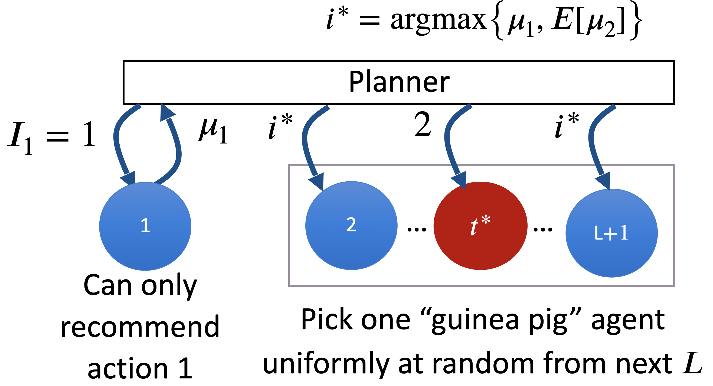
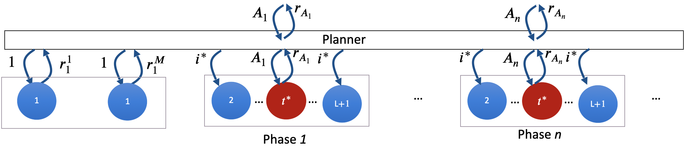

import numpy as np
from sklearn.gaussian_process import GaussianProcessClassifier
from sklearn.gaussian_process.kernels import RBF, ConstantKernel as C
import matplotlib.pyplot as plt
from tqdm import tqdm
# Define the Forrester function
def forrester_function(x):
"""
Evaluates the Forrester function at the given input.
Args:
- x (float or numpy.ndarray): Input value(s) in the range [0, 1].
Returns:
- float or numpy.ndarray: Evaluated Forrester function value(s).
"""
return (6 * x - 2)**2 * np.sin(12 * x - 4)
# Sigmoid function for probabilistic preferences
def sigmoid(x):
"""
Computes the sigmoid function for the given input.
Args:
- x (float or numpy.ndarray): Input value(s).
Returns:
- float or numpy.ndarray: Sigmoid-transformed value(s).
"""
return 1 / (1 + np.exp(-x))
# Simulate duel outcome probabilistically
def simulate_duel_outcome(x, x_prime):
"""
Simulates the outcome of a duel between two candidates based on probabilistic preferences.
Args:
- x (float): First candidate's input value.
- x_prime (float): Second candidate's input value.
Returns:
- int: 1 if x wins, 0 otherwise.
"""
prob = sigmoid(forrester_function(x_prime) - forrester_function(x)) # Probability x beats x'
return np.random.choice([1, 0], p=[prob, 1 - prob])
# Compute the Soft Copeland score for all candidates (vectorized)
def compute_max_copeland_score(candidates, gp, landmarks):
"""
Computes the maximum Copeland score for given candidates using predicted win probabilities.
Args:
- candidates (numpy.ndarray): Array of candidate points.
- gp (GaussianProcessClassifier): Trained Gaussian process classifier for preference modeling.
- landmarks (numpy.ndarray): Array of landmark points used for Monte Carlo approximation.
Returns:
- tuple: Maximum Copeland score and the best candidate.
"""
# YOUR CODE HERE (~6 lines)
# 1. Generate all pairs between candidates and landmarks.
# 2. Get win probabilities and average
# 3. Return appropriate maximum and best candidate.
pass
# END OF YOUR CODE
# Acquisition function with GP retraining and maximum Copeland score for each outcome
def copeland_acquisition(x, x_prime, x_candidates, gp, train_X, train_y, landmarks, max_copeland_score):
"""
Computes the acquisition value for a candidate pair by simulating outcomes and retraining the GP.
Args:
- x (float): First value of duel.
- x_prime (float): Second value of duel.
- x_candidates (numpy.ndarray): Array of candidate points to evaluate soft Copeland on.
- gp (GaussianProcessClassifier): Trained Gaussian process classifier for preference modeling.
- train_X (numpy.ndarray): Current training input pairs.
- train_y (numpy.ndarray): Current training labels.
- landmarks (numpy.ndarray): Array of landmark points used for Monte Carlo approximation.
- max_copeland_score (float): Maximum copeland score prior to acquiring any new pair
Returns:
- float: Acquisition value for the given pair (x, x_prime).
"""
# YOUR CODE HERE (~14-16 lines)
# 1. Predict dueling probabilities
# 2. Simulate adding (x, x') with y=1 (x beats x') and fit GP
# 3. Simulate adding (x, x') with y=0 (x' beats x) and fit GP
# 4. Compute expected improvement in max Copeland score
# 5. Return weighted acquisition value
pass
# END OF YOUR CODE
if __name__ == "__main__":
# Initialization
np.random.seed(42)
kernel = C(28.0, constant_value_bounds='fixed') * RBF(length_scale=0.15, length_scale_bounds='fixed')
gp = GaussianProcessClassifier(kernel=kernel)
# Generate initial training data (random pairs)
train_X = np.array([[0, 0], [0, 0]]) #np.random.uniform(0, 1, (10, 2)) # 20 random dueling pairs [x, x']
train_y = np.array([simulate_duel_outcome(pair[0], pair[1]) for pair in train_X])
# Fixed landmark points and their function values
landmarks = np.linspace(0, 1, 30) # 10 fixed landmarks
# Generate candidate pairs for optimization
x_candidates = np.linspace(0, 1, 30) # Reduced grid for efficiency
X, X_prime = np.meshgrid(x_candidates, x_candidates)
candidate_pairs = np.c_[X.ravel(), X_prime.ravel()]
# Optimization loop
n_iterations = 20
for iteration in range(n_iterations):
# Retrain the GP with current training data
gp.fit(train_X, train_y)
# Compute global maximum Copeland score
max_copeland_score, condorcet_winner = compute_max_copeland_score(x_candidates, gp, landmarks)
print(f"Condorcet winner iteration {iteration}: {condorcet_winner} with soft-Copeland score {max_copeland_score}")
# Evaluate acquisition values for all candidate pairs
acquisition_values = np.zeros(len(candidate_pairs))
for idx, (x, x_prime) in tqdm(enumerate(candidate_pairs), total=len(candidate_pairs)):
acquisition_values[idx] = copeland_acquisition(
x, x_prime, x_candidates, gp, train_X, train_y, landmarks, max_copeland_score
)
# Select the pair with the highest acquisition value
best_idx = np.argmax(acquisition_values)
next_x, next_x_prime = candidate_pairs[best_idx]
# Simulate the actual outcome of the duel
outcome = simulate_duel_outcome(next_x, next_x_prime)
# Update training data with the new duel outcome
train_X = np.vstack([train_X, [next_x, next_x_prime]])
train_y = np.append(train_y, outcome)
# Generate heatmaps
x = np.linspace(0, 1, 100)
X, X_prime = np.meshgrid(x, x)
pairs = np.c_[X.ravel(), X_prime.ravel()]
# Ground Truth Preference Probabilities
gt_preferences = np.array([
sigmoid(forrester_function(x_prime) - forrester_function(x))
for x, x_prime in pairs
]).reshape(X.shape)
# GP-Predicted Preferences
gp_predictions = gp.predict_proba(pairs)[:, 1].reshape(X.shape)
# Plot Ground Truth Preference Heatmap
plt.figure(figsize=(12, 6))
plt.subplot(1, 2, 1)
plt.contourf(X, X_prime, gt_preferences, levels=50, cmap='jet')
plt.colorbar(label="Ground Truth Preference Probability")
plt.title("Ground Truth Preference Heatmap")
plt.xlabel("x")
plt.ylabel("x'")
print(f'Chosen duels: {train_X[-n_iterations:]}')
# Plot GP-Predicted Preference Heatmap
plt.subplot(1, 2, 2)
plt.contourf(X, X_prime, gp_predictions, levels=50, cmap='jet')
plt.colorbar(label="GP-Predicted Preference Probability")
plt.scatter(train_X[-n_iterations:, 0], train_X[-n_iterations:, 1], c='black', label="Last Iterations", s=30, marker='x')
plt.title("GP-Predicted Preference Heatmap")
plt.xlabel("x")
plt.ylabel("x'")
plt.tight_layout()
plt.show()4 Model-Free Preference Optimization
Fullscreen Part 1 Fullscreen Part 2
4.1 Individual Preference Optimization via Dueling Bandit
4.1.1 Introduction to Dueling Bandit Problem and Its Extension
The multi-armed bandit (MAB) problem involves a gambler deciding which lever to pull on an MAB machine to maximize the winning rate, despite not knowing which machine is the most rewarding. This scenario highlights the need to balance exploration (trying new machines to discover potential higher rewards) and exploitation (using current knowledge to maximize gains). MAB algorithms address this dilemma by making decisions under uncertainty to achieve the best possible outcomes based on gathered data. At the core of the MAB problem is a set of actions, or ‘arms,’ denoted by \(\mathcal{A} = \{1, 2, \ldots, K\}\), where \(K\) signifies the total number of arms. For each round \(t\), the agent selects an arm \(a_t \in \mathcal{A}\) and receives a reward \(r_t\), sampled from an arm-specific, unknown probability distribution. The expected reward of pulling arm \(a\) is represented as \(\mu_a = \mathbb{E}[r_t | a]\).
The multi-armed bandit framework can be extended in various ways to model more complex scenarios. In the infinite-armed bandit problem, the set of possible arms \(\mathcal{A}\) is either very large or infinite. This introduces significant challenges in exploration, as the agent cannot afford to explore each arm even once. Algorithms for infinite-armed bandits typically assume some regularity or structure of the reward function across arms to make the problem tractable. The contextual bandit problem extends the bandit framework by incorporating observable external states or contexts that influence the reward distributions of arms. The agent’s task is to learn policies that map contexts to arms to maximize reward. This model is particularly powerful for personalized recommendations, where the context can include user features or historical interactions. In dueling bandit problems, the agent chooses two arms to pull simultaneously and receives feedback only on which of the two is better, not the actual reward values. This pairwise comparison model is especially useful in scenarios where absolute evaluations are difficult, but relative preferences are easier to determine, such as in ranking systems.
Contextual bandits extend the multi-armed bandits by making decisions conditional on the state of the environment and previous observations. The benefit of such a model is that observing the environment can provide additional information, potentially leading to better rewards and outcomes. In each iteration, the agent is presented with the context of the environment, then decides on an action based on the context and previous observations. Finally, the agent observes the action’s outcome and reward. Throughout this process, the agent aims to maximize the expected reward.
In many real-world contexts, one may not have a real-valued reward (or at least a reliable one) associated with a decision. Instead, we may only have observations indicating which of a set of bandits was optimal in a given scenario. The assumption is that within these observations of preferred choices among a set of options, there is an implicit reward or payoff encapsulated in that decision. Consider the following examples:
Dietary preferences: When providing food recommendations to humans, it is often not possible to quantify an explicit reward from recommending a specific food item. Instead, we can offer meal options and observe which one the person selects.
Video recommendation: Websites like YouTube and TikTok recommend specific videos to users. It is typically not feasible to measure the reward a person gains from watching a video. However, we can infer that a user preferred one video over another. From these relative preference observations, we can develop a strategy to recommend videos they are likely to enjoy.
Exoskeleton gait optimization: Tucker et al. (2020) created a framework that uses human-evaluated preferences for an exoskeleton gait algorithm to develop an optimal strategy for the exoskeleton to assist a human in walking. A human cannot reliably produce a numerical value for how well the exoskeleton helped them walk but can reliably indicate which option performed best according to their preferences.
Generally, we assume access to a set of actions. A noteworthy assumption is that any observations we make are unbiased estimates of the payoff. This means that if we observe a human preferred one option over another (or several others), the preferred option had a higher implicit reward or payoff than the alternatives. In the case of dietary preferences, this may mean that a human liked the preferred option; in the case of video recommendations, a user was more entertained, satisfied, or educated by the video they selected than the other options.
The overarching context is that we do not have direct or reliable access to rewards. We may not have a reward at all (for some decisions, it may be impossible to define a real value to the outcome), or it may be noisy (for example, if we ask a human to rate their satisfaction on a scale of 1 to 10). We use relative comparisons to evaluate the best of multiple options in this case. Our goal is to minimize total regret in the face of noisy comparisons. Humans may not always provide consistent observations (since human decision-making is not guaranteed to be consistent). However, we can still determine an optimal strategy with the observed comparisons. We aim to minimize the frequency of sub-optimal decisions according to human preferences. In practice, many formulations of bandits can allow for infinitely many bandits (for example, in continuous-value and high-dimensional spaces). However, this situation can be intractable when determining an optimal decision strategy. With infinite options, how can we always ensure we have chosen the best? We will constrain our bandits to a discrete space to enable efficient exploration. We will assume that we have \(k\) bandits, \(b_i, i \in [1, k]\), and our task is to choose the one that will minimize regret.
With the framework outlined, we now define our approach more formally. This method was introduced by (Yue et al. 2012), and proofs for the guarantees and derivations of parameters can be found in their work.
To determine the optimal action, we will compare pairwise to ascertain the probability that an action \(b_i\) is preferred over another \(b_j\), where \(i \ne j\). Concretely, we assume access to a function \(\epsilon\) that helps determine this probability; in practice, this can be done with an oracle, such as asking a human which of two options they prefer: \[P(b_i > b_j) = \varepsilon(b_i, b_j) + \frac{1}{2}.\] With this model, three basic properties govern the values provided by \(\epsilon\): \[\epsilon(b_i, b_j) = -\epsilon(b_j, b_i), \epsilon(b_i, b_i) = 0, \epsilon(b_i, b_j) \in \left(-\frac{1}{2}, \frac{1}{2} \right).\]
We assume there is a total ordering of bandits, such that \(b_i \succ b_j\) implies \(\epsilon(b_i, b_j) > 0\). We impose two constraints to properly model comparisons:
Strong Stochastic Transitivity: We must maintain our total ordering of bandits, and as such, the comparison model also respects this ordering: \[b_i \succ b_j \succ b_k \Rightarrow \epsilon(b_i, b_k) \ge \text{max}\{\epsilon(b_i, b_j), \epsilon(b_j, b_k)\}. \tag{4.1}\]
Stochastic Triangle Inequality: We also impose a triangle inequality, which captures the condition that the probability of a bandit winning (or losing) a comparison will exhibit diminishing returns as it becomes increasingly superior (or inferior) to the competing bandit: \[b_i \succ b_j \succ b_k \Rightarrow \epsilon(b_i, b_k) \le \epsilon(b_i, b_j) + \epsilon(b_j, b_k). \tag{4.2}\]
These assumptions may initially seem limiting; however, common models for comparisons satisfy these constraints. For example, the Bradley-Terry Model follows \(P(b_i > b_j) = \frac{\mu_i}{\mu_i + \mu_j}\). The Gaussian model with unit variance also satisfies these constraints: \(P(b_i > b_j) = P(X_i - X_j > 0)\), where \(X_i - X_j \sim N(\mu_i - \mu_j, 2)\).
To accurately model the preferences between bandits in our framework of pairwise bandit comparisons and regret, we must track certain parameters in our algorithm. First, we will maintain a running empirical estimate of the probability of bandit preferences based on our observations. It is important to note that we do not have direct access to an \(\epsilon\) function. Instead, we must present two bandits to a human, who selects a winner. To do this, we define: \[\hat{P}_{i, j} = \frac{\# b_i\ \text{wins}}{\# \text{comparisons between}\ i \text{and}\ j}.\]
We will also compute confidence intervals at each timestep for each of the entries in \(\hat{P}\) as \[\hat{C}_t = \left( \hat{P}_t - c_t, \hat{P}_t + c_t \right),\] where \(c_t = \sqrt{\frac{4\log(\frac{1}{\delta})}{t}}\). Note that \(\delta = \frac{1}{TK^2}\), where \(T\) is the time horizon and \(K\) is the number of bandits.
Previously, we discussed approaches for finding the best action in a specific context. Now, we consider changing contexts, which means there is no longer a static hidden preference matrix \(P\). Instead, at every time step, there is a preference matrix \(P_C\) depending on context \(C\). We consider a context \(C\) and a preference matrix \(P_C\) to be chosen by nature as a result of the given environment (Yue et al., 2012). The goal of a contextual bandits algorithm is to find a policy \(\pi\) that maps contexts to a Von Neumann winner distribution over our bandits. That is, our policy \(\pi\) should map any context to some distribution over our bandits such that sampling from that distribution is preferred to a random action for that context.
4.1.2 Regret
The agent aims to pick a sequence of arms \((a_1, a_2, \ldots, a_T)\) across a succession of time steps \(t = 1\) to \(t = T\) to maximize the total accumulated reward. Formally, the strategy seeks to maximize the sum of the expected rewards: \(\max_{a_1, \ldots, a_T} \mathbb{E} \left[\sum_{t=1}^{T} r_t\right]\). Regret is defined as the difference between the cumulative reward that could have been obtained by always pulling the best arm (in hindsight, after knowing the reward distributions) and the cumulative reward actually obtained by the algorithm. Formally, if \(\mu^*\) is the expected reward of the best arm and \(\mu_{a_t}\) is the expected reward of the arm chosen at time \(t\), the regret after \(T\) time steps is given by \(R(T) = T \cdot \mu^* - \sum_{t=1}^{T} \mu_{a_t}\). The objective of a bandit algorithm is to minimize this regret over time, effectively learning to make decisions that are as close as possible to the decisions of an oracle that knows the reward distributions beforehand. Low regret indicates an algorithm that has often learned to choose well-performing arms, balancing the exploration of unknown arms with the exploitation of arms that are already known to perform well. Thus, an efficient bandit algorithm exhibits sub-linear regret growth, meaning that the average regret per round tends to zero as the number of rounds \(T\) goes to infinity: \(\lim_{T \to \infty} \frac{R(T)}{T} = 0\). Minimizing regret is a cornerstone in the design of bandit algorithms, and its analysis helps in understanding the long-term efficiency and effectiveness of different bandit strategies.
As previously discussed, our goal is to select the bandit that minimizes a quantity that reflects regret or the cost of not selecting the optimal bandit at all times. We can leverage our comparison model to define a quantity for regret over some time horizon \(T\), which is the number of decisions we make (selecting what we think is the best bandit at each iteration). Assuming we know the best bandit \(b^*\) (and we know that there is a best bandit, since there is a total ordering of our discrete bandits), we can define two notions of regret:
Strong regret: aims to capture the fraction of users who would prefer the optimal bandit \(b^*\) over the worse of the options \(b_1, b_2\) we provide at a given step:\(R_T = \sum_{t = 1}^T \text{max} \left\{ \epsilon(b^*, b_1^{(t)}), \epsilon(b^*, b_2^{(t)}) \right\}\)
Weak regret: aims to capture the fraction of users who would prefer the optimal bandit \(b^*\) over the better of the options \(b_1, b_2\) we provide at a given step:\(\tilde{R}_T = \sum_{t = 1}^T \text{min} \left\{ \epsilon(b^*, b_1^{(t)}), \epsilon(b^*, b_2^{(t)}) \right\}\)
The best bandit described in our regret definition is called a Condorcet Winner. This is the strongest form of winner. It’s the action \(A_{i}\) which is preferred to each other action \(A_j\) with \(p > 0.5\) in a head-to-head election. While the above introduced notions of regret assume an overall best bandit to exist, there might be settings, where no bandit wins more than half head-to-head duels. A set of actions without a Condorcet winner is described by the following preference matrix, where each entry \(\Delta_{jk}\) is \(p(j \succ k) - 0.5\), the probability that action \(j\) is preferred over action \(k\) minus 0.5. There is no Condorcet winner as there is no action that is preferred with \(p > 0.5\) over all other actions. Imagine, you want to find the best pizza to eat (=action). There may not be a pizza that wins more than half of the head-to-head duels against every other pizza.
However, we might still have an intuition of the best pizza. Therefore Sui et al., 2018 introduce the concepts of different \(\textit{winners}\) in dueling bandit problems (Sui et al. 2018). In this example, we might define the best pizza as the most popular one. We call the Pizza receiving the most votes in a public vote the Borda Winner, or formally, Borda winner \(j = \arg\max_{i \in A, i \neq j} \left(\sum p(j \succ i)\right)\). In contrast to the Condorcet Winner setting, there is always guaranteed to be one or more (in the case of a tie) Borda winners for a set of actions. However - if there is a Condorcet Winner, this might not necessarily be the same as a Borda Winner: In our Pizza example, a Pepperoni Pizza might win more than half of its head-to-head duels, while the Cheese-Pizza is still the most popular in a public poll.
A more generic concept of winner is the Von Neumann Winner, which describes a probability distribution rather than a single bandit winner. A Von Neumann winner simply prescribes a probability distribution \(W\) such that sampling from this distribution ‘beats’ an action from the random uniform distribution with \(p > 0.5\). In our pizza example, this would correspond to trusting a friend to order whichever Pizza he likes, because this may still be preferred to ordering randomly. Formally, \(W\) is a Von Neumann if \((j \sim W, k \sim R) [p(p(j \succ k) > 0.5) > 0.5]\) where \(R\) describes the uniform probability distribution over our actions. The concept of a Von Neumann winner is useful in contextual bandits, which will be introduced later. In these settings, the preference matrix depends on different context, which may have different Borda winners, just as different parties may vote for different pizzas.
| A | B | C | D | E | F | |
|---|---|---|---|---|---|---|
| A | 0 | 0.03 | -0.02 | 0.06 | 0.10 | 0.11 |
| B | -0.03 | 0 | 0.03 | 0.05 | 0.08 | 0.11 |
| C | -0.03 | 0 | 0.04 | 0.07 | 0.09 | |
| D | -0.06 | -0.05 | -0.04 | 0 | 0.05 | 0.07 |
| E | -0.10 | -0.08 | -0.07 | -0.05 | 0 | 0.03 |
| F | -0.11 | -0.11 | -0.09 | -0.07 | -0.03 | 0 |
Next, we introduce two performance measures for the planner. The asymptotic ex-post regret is defined as \[\text{Regret}(\mu_1, \ldots \mu_K) = T\cdot \max_i \mu_i - \sum_{i=1}^T E[\mu_{I_t}].\]
Intuitively, this represents the difference between the reward achieved by always taking the action with the highest possible reward and the expected welfare of the recommendation algorithm (based on the actions it recommends at each timestep).
We also define a weaker performance measure, the Bayesian regret, which is defined as \[\text {Bayesian regret}=E_{\mu_1, \ldots, \mu_K \sim \text {Prior}}\left[\operatorname{Regret}\left(\mu_1, \ldots, \mu_K\right)\right]\]
With a Bayesian optimal policy, we would like either definition of regret to vanish as \(T\to \infty\); we are considering “large-market optimal" settings where there are many short-lived, rather than a few long-term, users. Note the fact that ex-post regret is prior-free makes it robust to inaccuracies on the prior.
4.1.3 Acquisition Functions
Various strategies have been developed to balance the exploration-exploitation trade-off. These strategies differ in selecting arms based on past experiences and rewards.
4.1.3.1 Classical Acquisition Functions
Uniform acquisition function is the most straightforward approach where each arm is selected uniformly randomly over time. This strategy does not consider the past rewards and treats each arm equally promising regardless of the observed outcomes. It is a purely explorative strategy that ensures each arm is sampled enough to estimate its expected reward, but it does not exploit the information to optimize rewards. In mathematical terms, if \(N_t(a)\) denotes the number of times arm \(a\) has been selected up to time \(t\), the Uniform Strategy would ensure that \(N_t(a) \approx \frac{t}{K}\) for all arms \(a\) as \(t\) grows large: \(P(a_t = a) = \frac{1}{K}\)
The Epsilon Greedy is a popular method that introduces a balance between exploration and exploitation. With a small probability \(\epsilon\), it explores by choosing an arm at random, and with a probability \(1 - \epsilon\), it exploits by selecting the arm with the highest estimated reward so far. This strategy incrementally favors actions that have historically yielded higher rewards, but still allows for occasional exploration to discover better options potentially. The parameter \(\epsilon\) is chosen based on the desired exploration level, often set between 0.01 and 0.1. \[P(a_t = a) = \begin{cases} \frac{\epsilon}{K} + 1 - \epsilon & \text{if } a = \arg\max_{a'} \hat{\mu}_{a'} \\ \frac{\epsilon}{K} & \text{otherwise} \end{cases}\]
Upper Confidence Bound (UCB) acquisition function takes a more sophisticated approach to the exploration-exploitation dilemma. It selects arms based on both the estimated rewards and the uncertainty or variance associated with those estimates. Specifically, it favors arms with high upper confidence bounds on the estimated rewards, which is a sum of the estimated mean and a confidence interval that decreases with the number of times the arm has been played. This ensures that arms with less certainty (those played less often) are considered more often, naturally balancing exploration with exploitation as the uncertainty is reduced over time.
\[P(a_t = a) = \begin{cases} 1 & \text{if } a = \arg\max_{a'} \left( \hat{\mu}_{a'} + \sqrt{\frac{2 \ln t}{N_t(a')}} \right) \\ 0 & \text{otherwise} \end{cases}\]
4.1.3.2 Interleaved Filter
This algorithm tries to find the best bandit (Condorcet Winner) in a discrete, limited bandit-space via pairwise comparisons of the bandits. We will now introduce the algorithm for the Interleaved Filter as provided in (Yue et al. 2012) to solve a dueling bandit setup. It starts with a randomly defined best bandit \(\hat{b}\) and iteratively compares it to set \(W\) containing the remaining bandits \(b\) resulting in winning probabilities \(\hat{P}_{\hat{b},b}\) and confidence interval \(\hat{C}_{\hat{b},b}\). If a bandit \(b\) is confidently worse than \(\hat{b}\), it is removed from \(W\). If a bandit \(b'\) is confidently better than \(\hat{b}\), it is set as new best bandit \(\hat{b}\) and bandit \(\hat{b}\) as well as every other bandit \(b\) worse than \(\hat{b}\) are removed from \(W\). This is done, until \(W\) is empty, leaving the final \(\hat{b}\) as the predicted best bandit.
input: \(T\), \(B=\{b_1, \dots, b_k\}\) \(\delta \gets 1/(TK^2)\) Choose \(\hat{b} \in B\) randomly \(W \gets \{b_1, \dots, b_k\} \backslash \{\hat{b}\}\) \(\forall b \in W\), maintain estimate \(\hat{P}_{\hat{b},b}\) of \(P(\hat{b} > b)\) according to (6) \(\forall b \in W\), maintain \(1 - \delta\) confidence interval \(\hat{C}_{\hat{b},b}\) of \(\hat{P}_{\hat{b},b}\) according to (7), (8) compare \(\hat{b}\) and \(b\) update \(\hat{P}_{\hat{b},b}\), \(\hat{C}_{\hat{b},b}\) \(W \gets W \backslash \{b\}\)
\(W \gets W \backslash \{b\}\) \(\hat{b} \gets b'\), \(W \gets W \backslash \{b'\}\) \(\forall b \in W\), reset \(\hat{P}_{\hat{b},b}\) and \(\hat{C}_{\hat{b},b}\) \(\hat{T} \gets\) Total Comparisons Made \((\hat{b}, \hat{T})\)
- Parameter Initialization
-
In lines 1-6 of the algorithm, we take the inputs and first compute the value \(\delta\) which is used to compute our confidence intervals. We select an initial guess of an optimal bandit \(\hat{b}\) by uniformly sampling from all bandits \(\mathcal{B}\). We also keep a running set of bandit candidates \(W\), which is initialized to be \(\mathcal{B} \setminus \{\hat{b}\}\). At this point, we also initialize our empirical estimates for \(\hat{P}, \hat{C}\).
Next, we will repeat several steps until our working set of bandit candidates \(W\) is empty.
- Update Estimates Based on Comparisons
-
The first step at each iteration (lines 8-11) is to look at all candidates in \(W\), and compare them to our current guess \(\hat{b}\) using an oracle (e.g. by asking a human which of \(\hat{b}\) or \(b \in W\) is preferred). With this new set of wins and comparisons, we update our estimates of \(\hat{P}, \hat{C}\).
- Prune Suboptimal Bandits
-
In lines 12-13, with updated comparison win probabilities and corresponding confidence intervals, we can remove bandit candidates from \(W\) that we are confident \(\hat{b}\) is better than. The intuition here is that we are mostly sure that our current best guess is better than some of the candidates, and we don’t need to consider those candidates in future iterations.
- Check for Better Bandits from Candidate Set
-
Now that our candidate set of bandits may be smaller, in lines 15-21 we check if there are any bandits \(b'\) that we are confident are better than our current best guess. If we do find such a candidate, we remove bandits which \(\hat{P}\) indicates \(b\) is likely worse than \(\hat{b}\). Note that in this step, we do not require the probability to be outside the confidence interval, since we already found one we believe to be significantly closer to optimal than our current best guess.
Once we remove the candidates likely worse than \(\hat{b}\), we crown \(b'\) as the new best guess, e.g. \(\hat{b} := b'\). Consequently, we remove \(b'\) from \(W\) and reset our empirical win counters \(\hat{P}, \hat{C}\).
With this algorithm defined, let us look at some provisions of the method with respect to identifying the optimal strategy. Note that the proofs and derivations for these quantities are provided in (Yue et al. 2012).
First, the method guarantees that for the provided time horizon \(T\), the algorithm returns the correct bandit with probability \(P \ge 1 - \frac{1}{T}\). It is interesting and useful to note that if one has a strict requirement for the probability of identifying the correct bandit, one can compute the time horizon \(T\) that guarantees this outcome at that probability. Furthermore, a time horizon of 1 leaves no probabilistic guarantee of a successful outcome, and increasing \(T\) has diminishing returns. Second, in the event that the algorithm returns an incorrect bandit, the maximal regret incurred is linear with respect to \(T\), e.g. \(\mathcal(O)(T)\). This is also a useful provision as it allows us to estimate the overall cost in the worst case outcome. Based on these two provisions, we can compute the expected cumulative regret from running the Interleaved Filter algorithm, which is: \[\mathbb{E}\left[R_T\right] \le \left(1 - \frac{1}{T}\right) \mathbb{E}\left[ R_T^{IF} \right] + \frac{1}{T}\mathcal{O}(T) \\ = \mathcal{O}\left(\mathbb{E}\left[ R_T^{IF} \right] + 1\right)\]
Interestingly, the original work shows that these bounds hold for both strong and weak regret. As demonstrated, the Interleaved Filter algorithm [fig-if] provides a robust method to ascertain the optimal bandit or strategy given a set of options and only noisy comparisons. In most real-world scenarios for modeling human preferences, it is not possible to observe a real-world reward value, or at least a reliable one and as such this method is a useful way to properly model human preferences.
Furthermore, the algorithm provides strong guarantees for the probability of selecting the correct bandit, maximal regret, and the number of comparisons required. It is even more impressive that the method can do so without severely limiting constraints; as demonstrated, the most commonly used models satisfy the imposed constraints.
As we look to model human preferences, we can certainly leverage this method for k-armed dueling bandits to identify the best strategy to solve human-centric challenges, from video recommendation to meal selection and exoskeleton-assisted walking.
4.1.3.3 Dueling Bandit Gradient Descent
This algorithm tries to find the best bandit in a continuous bandit-space. Here, the set of all bandits is regarded as an Information-Retrieval (IR) system with infinite bandits uniquely defined by \(w\). We will cover the Dueling Bandit Gradient Descent algorithm from Yue and Joachims 2009 (Yue and Joachims 2009). Yue and Joachims use the dueling bandits formulation for online IR optimization. They propose a retrieval system parameterized by a set of continuous variables lying in \(W\), a \(d\)-dimensional unit-sphere. The DBGD algorithm adapts the current parameters \(w_t\) of IR system by comparison with slightly altered parameters \(w_t'\) both querying query \(q_t\). Only if the IR outcome using \(w_t'\) is preferred, the parameters are changed in their direction. We will now discuss the algorithm more detailed.
input: \(\gamma\), \(\delta\), \(w_1\)
Sample unit vector \(u_t\) uniformly
\(w_t' \gets P_W(w_t + \delta u_t)\)
Compare \(w_t\) and \(w_t'\)
\(w_{t+1} \gets P_W(w_t + \gamma u_t)\)
\(w_{t+1} \gets w_t\)
We first choose exploration step length \(\delta\), exploitation step length \(\gamma\), and starting point (in unit-sphere) \(w_1\). Choose a query and sample a random unit vector \(u_t\). We duel \(w_t\) and \(w_t'\), where \(w_t\) is our current point in the sphere, and \(w_t'\) is our exploratory comparison, which is generated by taking a random step of length \(\delta\), such that \(w_t' = w_t + \delta u_t\). The objective of this duel is to ascertain the binary preference of users with respect to the results yielded by the IR systems parameterized by \(w_t\) and \(w_t'\) respectively, taking query \(q_t\) as an input. The parameters that get the majority of the votes in the head to head win. If \(w_t\) wins, then we keep the parameters for the next iteration. If \(w_t'\) wins the duel, we update our parameters in the direction of \(u_t\) by taking a step of length \(\gamma\). Note that the algorithm describes projection operation \(P_W(\overrightarrow{v})\). Since \(u_t\) is chosen randomly, \(w_t + \delta u_t\) or \(w_t + \gamma u_t\) could exist outside of the unit sphere where all possible parameter configurations lie. In this case, we simply project the point back onto the sphere using said projection \(P_W(\overrightarrow{v})\).
Yue and Joachims show that this algorithm has sublinear regret in \(T\), the number of iterations. We note that the algorithm assumes that there exists a hidden reward function \(R(w)\) that maps system parameters \(w_t\) to a reward value which is smooth and strictly concave over the input space \(W\).
Lastly, we would also like to give motivation behind \(\delta\) and \(\gamma\) being different values. We need a \(\delta\) that is sufficiently large that the comparison between a system parameterized by \(w_t\) and \(w_t'\) is meaningful. On the other hand, we may wish to take a smaller step in the direction of \(w_t'\) during our update step, as during a duel, we only score \(w_t\) against \(w_t'\) over the results on one query \(q_t\). Having \(\delta > \gamma\) allows us to get reward signal from meaningfully different points while also updating our belief of the best point \(w_{\text{best}}\) gradually.
Sparring EXP4
Zoghi et al. 2015 propose one algorithm for this problem — sparring EXP4, which duels two traditional EXP4 - algorithms. The (traditional) EXP4 algorithm solves the traditional contextual bandits — the case where we can directly observe a reward for a choice of bandit given a context. The EXP4 algorithm embeds each bandit as a vector. When the algorithm sees the context (called ‘advice’ in this formulation), it produces a probability distribution over the choices based on an adjusted softmax function on the inner product between the context and the bandit vectors. The probability function is different from a softmax as we assign some minimum probability that any action gets chosen to enforce exploration. A reward is then observed for the choice and propagated back through the embedding of the chosen bandit.
Sparring EXP4 runs two instances of the EXP4 algorithm against each other. Each EXP4 instance samples an action given a context, and then these choices are ‘dueled’ against each other. Instead of directly observing a reward, as for traditional EXP4, we instead observe two converse reward — a positive reward for the choice that won the duel and a negative reward to the choice that lost. The reward is proportional to the degree to which the bandit wins the duel, i.e. how likely the bandit is to be preferred over the other when users are queried for binary preferences. Like in traditional EXP4, the reward or negative reward is then propagated back through the representations of the bandits.
4.1.3.4 Feel-good Thompson sampling
This algorithm is a solution for the contextual dueling bandit setting, and tries to minimize cumulative average regret (= find WHAT WINNER?!Von Neumann???): \[\text{Regret}(T) := \sum_{t=1}^{T} \left[ r_{*}(x_t, a_{t}^{*}) - \frac{r_{*}(x_t, a_{t}^{1}) + r_{*}(x_t, a_{t}^{2})}{2} \right],\] where \(r_{*}(x_t, a_{t})\) is the true, hidden reward function of a context \(x_t\) and action \(a_t\). Thompson sampling is an iterative process of receiving preference over two actions, each maximizing a different approximation of the reward function based on past data and adding this new information to the data.
Finding good approximations of the reward function at time \(t\) is done by sampling two reward function parameters \(\theta_t^{j=1}\) and \(\theta_t^{j=2}\) from a posterior distribution based on all previous data \(p_j(\cdot \mid S_{t-1})\). This posterior distribution is proportional to the multiplication of the prior and the likelihood function, which is a Gaussian in standard Thompson sampling. In Feel-Good Thompson sampling, an additional term called "Feel-good exploration" encourages parameters \(\theta\) with a large maximum reward in previous rounds. This change to the likelihood function may increase probabilities in uncertain areas, thus exploring those regions. All that’s left is to select an action maximizing each reward function approximation and receive a preference \(y_t\) on one of them to add the new information to the dataset(Zhang 2021).
Initialize \(S_0 = \varnothing\). Receive prompt \(x_t\) and action space \(\mathcal{A}_t\). Sample model parameter \(\theta_t^j\) from the posterior distribution \(p^j(\cdot \mid S_{t-1})\) Select response \(a_t^j = \arg\max_{a \in \mathcal{A}_t} \langle \theta_t^j, \phi(x_t, a) \rangle\). Receive preference \(y_t\). Update dataset \(S_t \leftarrow S_{t-1} \cup \{(x_t, a_t^1, a_t^2, y_t)\}\).
4.1.4 Applications
There are many applications where contextual bandits are used. Many of these applications can utilize human preferences. One particular application illustrates the benefits a contextual bandit would have over a multi-armed bandit: a website deciding which app to show someone visiting the website. A multi-armed bandit might decide to show someone an ad for a swimsuit because the swimsuit ads have gotten the most user clicks (which indicates human preference). A contextual bandit might choose differently, however. A contextual bandit will also take into account the context, which in this case might mean information about the user (location, previously visited pages, and device information). If it discovers the user lives in a cold environment, for example, it might suggest a sweater ad for the user instead and get a better chance of a click. There are many more examples of where contextual bandits can be applied. They can be applied in other web applications, such as to optimize search results, medical applications, such as how much of a medication to prescribe based on a patient’s history, and gaming applications, such as basing moves off of the state of a chess board to try to win. In each of the above examples, human feedback could have been introduced during training and leveraged to learn a reward function.
We explored different versions of bandits that address the exploration-exploitation trade-off in various real-world scenarios. These models have been employed across various fields, including but not limited to healthcare, finance, dynamic pricing, and anomaly detection. This section provides a deep dive into some real-world applications, emphasizing the value and advancements achieved by incorporating bandit methodologies. The content of this section draws upon the findings from the survey cited in reference (Bouneffouf, Rish, and Aggarwal 2020).
In healthcare, researchers have been applying bandits to address challenges in clinical trials and behavioral modeling (Bouneffouf, Rish, and Cecchi 2017; Bastani and Bayati 2020). One of the examples is drug dosing. Warfarin, an oral anticoagulant, has traditionally been administered using fixed dosing protocols. Physicians would then make subsequent adjustments based on the patient’s emerging symptoms. Nonetheless, inaccuracies in the initial dosage—whether too low or too high—can lead to serious complications like strokes and internal bleeding. In a pivotal study, researchers in (Bastani and Bayati 2020) modeled the Warfarin initial dosing as a contextual bandit problem to assign dosages to individual patients appropriately based on their medication history. Their contributions include the adaptation of the LASSO estimator to the bandit setting, achieving a theoretical regret bound of \(O({s_0}^2 \log^2(dT)\), where \(d\) represents the number of covariates, \(s_0 << d\) signifies the number of pertinent covariates, and \(T\) indicates the total number of users. Additionally, they conducted empirical experiments to validate the robustness of their methodology.
Within the finance sector, bandits have been instrumental in reshaping the landscape of portfolio optimization. Portfolio optimization is an approach to designing a portfolio based on the investor’s return and risk criteria, which fits the exploration-exploitation nature of the bandit problems. (Shen et al. 2015) utilized multi-armed bandits to exploit correlations between the instruments. They constructed orthogonal portfolios and integrated them with the UCB policy to achieve a cumulative regret bound of \(\frac{8n}{\Delta*} \ln(m) + 5n\), where \(n\), \(m\), and \(\Delta*\) denotes the number of available assets, total time steps, and the gap between the best-expected reward and the expected reward. On the other hand, (Huo and Fu 2017) focused on risk-awareness online portfolio optimization by incorporating a compute of the minimum spanning tree in the bipartite graph, which encodes a combination of financial institutions and assets that helps diversify and reduce exposure to systematic risk during the financial crisis.
Dynamic pricing, also known as demand-based pricing, refers to the strategy of setting flexible prices for products or services based on current market demands. The application of bandits in dynamic pricing offers a systematic approach to making real-time pricing decisions while balancing the trade-off between exploring new price points and exploiting known optimal prices. (Misra, Schwartz, and Abernethy 2019) proposed a policy where the company has only incomplete demand information. They derived an algorithm that balances immediate and future profits by combining multi-armed bandits with partial identification of consumer demand from economic theory.
are essential components of numerous online platforms, guiding users through vast content landscapes to deliver tailored suggestions. These systems are instrumental in platforms like e-commerce sites, streaming platforms, and social media networks. However, the challenge of effectively recommending items to users is non-trivial, given the dynamic nature of user preferences and the vast amount of content available.
One of the most significant challenges in recommendation systems is the "cold start" problem. This issue arises when a new user joins a platform, and the system has limited or no information about the user’s preferences. Traditional recommendation algorithms struggle in such scenarios since they rely on historical user-item interactions. As discussed in (Zhou et al. 2017), the bandit setting is particularly suitable for large-scale recommender systems with a vast number of items. By continuously exploring user preferences and exploiting known interactions, bandit-based recommender systems can quickly adapt to new users, ensuring relevant recommendations in a few interactions. The continuous exploration inherent in bandit approaches also means that as a user’s preferences evolve, the system can adapt, ensuring that recommendations remain relevant. Recommending content that is up to date is also another important aspect of a recommendation system. In (Bouneffouf, Bouzeghoub, and Gançarski 2012), the concept of "freshness" in content is explored through the lens of the bandit problem. The Freshness-Aware Thompson Sampling algorithm introduced in this study aims to manage the recommendation of fresh documents according to the user’s risk of the situation.
Dialogue systems, often termed conversational agents or chatbots, aim to simulate human-like conversations with users. These systems are deployed across various platforms, including customer support, virtual assistants, and entertainment applications, and they are crucial for enhancing user experience and engagement. Response selection is fundamental to creating a natural and coherent dialogue flow. Traditional dialogue systems rely on a predefined set of responses or rules, which can make interactions feel scripted and inauthentic. In (Liu et al. 2018), the authors proposed a contextual multi-armed bandit model for online learning of response selection. Specifically, they utilized bidirectional LSTM to produce the distributed representations of a dialogue context and responses and customized the Thompson sampling method.
To create a more engaging and dynamic interaction, there’s a growing interest in developing pro-active dialogue systems that can initiate conversations without user initiation. (perez and Silander 2018) proposed a novel approach to this challenge with contextual bandits. By introducing memory models into the bandit framework, the system can recall past interactions, making its proactive responses more contextually relevant. Their contributions include the Contextual Attentive Memory Network, which implements a differentiable attention mechanism over past interactions.
(Upadhyay et al. 2019) addressed the challenge of orchestrating multiple independently trained dialogue agents or skills in a unified system. They attempted online posterior dialogue orchestration, defining it as selecting the most suitable subset of skills in response to a user’s input, which studying a context-attentive bandit model that operates under a skill execution budget, ensuring efficient and accurate response selection.
Anomaly detection refers to the task of identifying samples that behave differently from the majority. In (Ding, Li, and Liu 2019), the authors delve into anomaly detection in an interactive setting, allowing the system to actively engage with human experts through a limited number of queries about genuine anomalies. The goal is to present as many true anomalies to the human expert as possible after a fixed query budget is used up. They applied the multi-armed contextual bandit framework to address this issue. This algorithm adeptly integrates both nodal attributes and node dependencies into a unified model, efficiently managing the exploration-exploitation trade-off during anomaly queries.
There are many challenges associated with contextual bandits. The first challenge is that each action only reveals the reward for that particular action. Therefore, the algorithm has to work with incomplete information. This leads to the dilemma of exploitation versus exploration: when should the algorithm choose the best-known option versus trying new options for potentially better outcomes? Another significant challenge for contextual bandits is using context effectively. The context the environment gives needs to be explored to figure out which action is best for each context.
The overarching goal in systems designed for recommending options of high value to users is to achieve an optimal balance between exploration and exploitation. This dual approach is crucial in environments where user preferences and needs are dynamic and diverse. Exploration refers to the process of seeking out new options, learning about untried possibilities, and gathering fresh information that could lead to high-value recommendations. In contrast, exploitation involves utilizing existing knowledge and past experiences to recommend the best options currently known. This balance is key to maintaining a system that continuously adapts to changing user preferences while ensuring the reliability of its recommendations.
A key observation in such systems is the dual role of users as both producers and consumers of information. Each user’s experience contributes valuable data that informs future recommendations for others. For instance, platforms like Waze, Netflix, and Trip Advisor rely heavily on user input and feedback. Waze uses real-time traffic data from drivers to recommend optimal routes; Netflix suggests movies and shows based on viewing histories and ratings; Trip Advisor relies on traveler reviews to guide future tourists. In these examples, the balance between gathering new information (exploration) and recommending the best-known options (exploitation) is dynamically managed to enhance user experience and satisfaction. This approach underscores the importance of user engagement in systems where monetary incentives are not (or can not be) the primary driver.
Recommendation systems often face the challenge of overcoming user biases that can lead to a narrow exploration of options. Users come with preconceived notions and preferences, which can cause them to overlook potentially valuable options that initially appear inferior or unaligned with their interests. This predisposition can significantly limit the effectiveness of recommendation systems, as users might miss out on high-value choices simply due to their existing biases.
To counteract this, it is crucial for recommendation systems to actively incentivize exploration among users. One innovative approach to achieve this is through the strategic use of information asymmetry. By controlling and selectively presenting information, these systems can guide users to explore options they might not typically consider. This method aims to reveal the true potential of various options by nudging users out of their comfort zones and encouraging a broader exploration of available choices. An important note here is that the system is not lying to users - it only selectively reveals information it has.
The concept of incentivizing exploration becomes even more complex when considering different types of users. For instance, systems often encounter short-lived users who have little to gain from contributing to the system’s learning process, as their interactions are infrequent or based on immediate needs. Similarly, some users may operate under a ‘greedy’ principle, primarily seeking immediate gratification rather than contributing to the long-term accuracy and effectiveness of the system. In such scenarios, managing information asymmetry can be a powerful tool. By selectively revealing information, recommendation systems can create a sense of novelty and interest, prompting even the most transient or self-interested users to engage in exploration, thereby enhancing the system’s overall knowledge base and recommendation quality.
4.1.5 Incentive-Compatible Online Learning
To address this problem, we seek to create a model. But first, it is useful to outline the key criteria that our model must achieve.
The core of the model revolves around repeated interactions between a planner (the system) and multiple agents (the users). Each agent, upon arrival in the system, is presented with a set of available options to choose from. These options could vary widely depending on the application of the model, such as routes in a transportation network, a selection of hotels in a travel booking system, or even entertainment choices in a streaming service.
The interaction process is straightforward but crucial: agents arrive, select an action from the provided options, and then report feedback based on their experience. This feedback is vital as it forms the basis upon which the planner improves and evolves its recommendations. The agents in this model are considered strategic; they aim to maximize their reward based on the information available to them. This aspect of the model acknowledges the real-world scenario where users are typically self-interested and seek to optimize their own outcomes.
The planner, on the other hand, has a broader objective. It aims to learn which alternatives are best in a given context and works to maximize the overall welfare of all agents. This involves a complex balancing act: the planner must accurately interpret feedback from a diverse set of agents, each with their own preferences and biases, and use this information to refine and improve the set of options available. The ultimate goal of the planner is to create a dynamic, responsive system that not only caters to the immediate needs of individual agents but also enhances the collective experience over time, leading to a continually improving recommendation ecosystem.
Let’s break this up into a set of tangible research questions that we seek to answer in the rest of this chapter.
Planner Limitations: We seek to address the inherent limitations faced by the planner, particularly in scenarios where monetary transfers are not an option, and the only tool at its disposal is the control over the flow of information between agents. This inquiry aims to understand the extent to which these limitations impact the planner’s ability to effectively guide and influence agent behavior.
Inducing Exploration: A critical question is whether the planner can successfully induce exploration among agents, especially in the absence of financial incentives. This involves investigating strategies to encourage users to try less obvious or popular options, thus broadening the scope of feedback and enhancing the system’s ability to learn and identify the best alternatives.
Rate of Learning: Another essential research area is understanding the rate at which the planner learns from agent interactions. This encompasses examining how different agent incentives, their willingness to explore, and their feedback impact the speed and efficiency with which the planner can identify optimal recommendations.
Model Extensions: The model can be extended in several directions, each raising its own set of questions.
Multiple Agents with Interconnected Payoffs: When multiple agents arrive simultaneously, their choices and payoffs become interconnected, resembling a game. The research question here focuses on how these interdependencies affect individual and collective decision-making.
Planner with Arbitrary Objective Function: Investigating scenarios where the planner operates under an arbitrary objective function, which might not align with maximizing overall welfare or learning the best alternative.
Observed Heterogeneity Among Agents: This involves situations where differences among agents are observable and known, akin to contextual bandits in machine learning. The research question revolves around how these observable traits can be used to tailor recommendations more effectively.
Unobserved Heterogeneity Among Agents: This aspect delves into scenarios where differences among agents are not directly observable, necessitating the use of causal inference techniques to understand and cater to diverse user needs.
Bayesian Incentive-Compatible Bandit Model
In this section, we introduce the main model of study in this chapter (Mansour, Slivkins, and Syrgkanis 2019; Mansour et al. 2021). In our setup, there is a “planner," which aims to increase exploration, and many independent”agents," which will act selfishly (in a way that they believe will maximize their individual reward).
Under our model shown in Figure 1.1, there are \(K\) possible actions that all users can take, and each action has some mean reward \(\mu_i \in [0, 1]\). In addition, there is a common prior belief on each \(\mu_i\) across all users.. The \(T\) agents, or users, will arrive sequentially. As the \(t\)’th user arrives, they are recommended an action \(I_t\) by the planner, which they are free to follow or not follow. After taking whichever action they choose, the user experiences some realized reward \(r_i \in [0, 1]\), which is stochastic i.i.d. with mean \(\mu_i\), and reports this reward back to the planner.

So far, the model we have defined is equivalent to a multi-armed bandit model, which we have seen earlier in this chapter (1). Under this model, well-known results in economics, operations research and computer science show that \(O(\sqrt{T})\) regret is achievable (Russo and Roy 2015; Auer, Cesa-Bianchi, and Fischer 2002; Lai and Robbins 1985) with algorithms such as Thompson sampling and UCB.
However, our agents are strategic and aim to maximize their own rewards. If they observe the rewards gained from actions taken by other previous users, they will simply take the action they believe will yield the highest reward given the previous actions; they would prefer to benefit from exploration done by other users rather than take the risk of exploring themselves. Therefore, exploration on an individual level, which the planner would like to facilitate, is not guaranteed under this paradigm.
In light of this, we also require that our model satisfy incentive compatibility, or that taking the action recommended by the planner has an expected utility that is as high as any other action the agent could take. Formally, \[\forall i : \, E[\mu_i | I_t = i] \geq E[\mu_{i'} | I_t = i].\] Note that this incentivizes the agents to actually take the actions recommended by the planner; if incentive compatibility is not satisfied, agents would simply ignore the planner and take whatever action they think will lead to the highest reward.
At a high level, the key to achieving incentive compatibility while still creating a policy for the planner that facilitates exploration is information asymmetry. Under this paradigm, the users only have access to their previous recommendations, actions, and rewards, and not to the recommendations, actions, and rewards of other users. Therefore, they are unsure of whether, after other users take certain actions and receive certain rewards, arms that they might have initially considered worse in practice outperform arms that they initially considered better. Only the planner has access to the previous actions and rewards of all users; the user only has access to their own recommendations and overall knowledge of the planner’s policy.
The main question we aim to answer for the rest of this section is, given this new constraint of incentive compatibility, is \(O(\sqrt{T})\) regret still achievable? We illustrate such an algorithm in the following.
Black-box Reduction Algorithm
The main result for this chapter is a black-box reduction algorithm to turn any bandit algorithm into an incentive compatible one, with only a constant increase in Bayesian regret. Since, as mentioned earlier, there are bandit algorithms with \(O(\sqrt{T})\) Bayesian regret, black-box reduction will also allow us to get incentive-compatible algorithms with \(O(\sqrt{T})\) regret. The idea of black-box reduction will be to simulate \(T\) steps of any bandit algorithm in an incentive-compatible way in \(c T\) steps. This allows us to design incentive-compatible recommendation systems by using any bandit algorithm and then adapting it.
Consider the following setting: there are two possible actions, \(A_1\) and \(A_2\). Assume the setting of deterministic rewards, where action 1 has reward \(\mu_1\) with prior \(U[1/3, 1]\) and mean \(\mathbb{E}[\mu_1] = 2/3\), and action 2 has reward \(\mu_2\) with prior \(U[0, 1]\) and mean \(\mathbb{E}[\mu_2] = 1/2\). Without the planner intervention and with full observability, users would simply always pick \(A_1\), so how can the planner incentivize users to play \(A_2\)?

The key insight is going to be to hide exploration in a pool of exploitation. The users are only going to receive a recommendation from the planner, and no other observations. After deterministically recommending the action with the highest expected reward (\(A_1\)), the planner will pick one guinea pig to recommend the exploratory action of \(A_2\). The users don’t know whether they are the guinea pig, so intuitively, as long as the planner picks guinea pigs uniformly at random and at low enough frequencies, the optimal decision for the users is still to follow the planner’s recommendation, even if it might go against their interest.
The planner will pick the user who will be recommended the exploratory action uniformly at random from the \(L\) users that come after the first one (which deterministically gets recommended the exploitation action). Under this setting (illustrated in Figure 1.2), it is optimal for users to always follow the option that is recommended for them. More formally, if \(I_t\) is the recommendation that a user receives at time \(t\), then we have that: \[\begin{split} \mathbb{E}[\mu_1 - \mu_2 | I_t = 2] Pr[I_t = 2] &= \frac{1}{L} (\mu_1 - \mu_2) \quad \text{(Gains if you are the unlucky guinea pig)}\\ &+ (1 - \frac{1}{L}) \mathbb{E}[\mu_1 - \mu_2 | \mu_1 < \mu_2] Pr[\mu_1 < \mu_2] \quad \text{(Loss if you are not and $\mu_1 < \mu_2$)}\\ &\leq 0 \end{split}\] This holds when \(L \geq 12\). It means that the gains from not taking the recommended action are negative, which implies that users should always take the recommendation.
So far we have considered the case where rewards are deterministic, but what about stochastic rewards? We are now going to consider the case where rewards are independent and identically distributed from some distribution, and where each action \(A_i\) has some reward distribution \(r_i^t \sim D_i, \mathbb{E}[r_i^t] = \mu_i\). Back to the case where there are only two actions, we are going to adapt the prior algorithm of guinea pig-picking to the stochastic reward setting. Since one reward observation is not enough to fully know \(\mu_1\) anymore, we’ll instead observe the outcome of the first action \(M\) times to form a strong posterior \(\mathbb{E}[\mu_1 | r_1^1, \ldots r_1^M]\).

Figure 1.3 illustrates the algorithm that we can use with stochastic rewards when there are two actions. Similarly, as before, we pick one guinea pig uniformly at random from the next \(L\) users and use the reward we get as the exploratory signal.
In a very similar manner, we can generalize this algorithm from always having two actions to the general multi-armed bandit problem. Now suppose we have a general multi-armed bandit algorithm \(A\). We will wrap this algorithm around our black box reduction algorithm to make it incentive-compatible.

As Figure 1.4 shows, we wrap every decision that \(A\) would make by exactly \(L-1\) recommendations of the action believed to be the best so far. This guarantees that the expected rewards for the users that are not chosen as guinea pigs are at least as good as \(A\)’s reward at phase \(n\).
4.2 Preferential Bayesian Optimization
The traditional Bayesian optimization (BO) problem is described as follows. There is a black-box objective function \(g: \mathcal{X} \rightarrow \Re\) defined on a bounded subset \(\mathcal{X} \subseteq \Re^q\) such that direct queries to the function are expensive or not possible. However, we would like to solve the global optimization problem of finding \(\mathbf{x}_{\min }=\arg \min _{\mathbf{x} \in \mathcal{X}} g(\mathbf{x})\). This is highly analogous to modeling human preferences, since it is the case that direct access to a human’s latent preference function is not possible but we would still like to find its optimum, such as in A/B tests or recommender systems.
We approach this problem for human preferences with Preferential Bayesian Optimization (PBO), as the key difference is that we are able to query the preference function through pairwise comparisons of data points, i.e. duels. This is a form of indirect observation of the objective function, which models real-world scenarios closely: we commonly need to to optimize a function via data about preferences. With humans, it has been demonstrated that we are better at evaluating differences rather than absolute magnitudes (Kahneman and Tversky 1979) and therefore PBO models can be applied in various contexts.
4.2.1 Problem statement
The problem of finding the optimum of a latent preference function defined on \(\mathcal{X}\) can be reduced to determining a sequence of duels on \(\mathcal{X} \times \mathcal{X}\). From each duel \(\left[\mathbf{x}, \mathbf{x}^{\prime}\right] \in\) \(\mathcal{X} \times \mathcal{X}\) we obtain binary feedback \(\{0,1\}\) indicating whether or not \(\mathbf{x}\) is preferred over \(\mathbf{x}^{\prime}\) (\(g(\mathbf{x}) < g(\mathbf{x}^{\prime})\)). We consider that \(\mathbf{x}\) is the winner of the duel if the output is \(\{1\}\) and that \(\mathbf{x}^{\prime}\) wins the duel if the output is \(\{0\}\). The aim is to find \(\mathbf{x}_{\min }\) by reducing as much as possible the number of queried duels.
The key idea in PBO is to learn a preference function in the space of duels using a Gaussian process. We define a joint reward \(f\left(\left[\mathbf{x}, \mathbf{x}^{\prime}\right]\right)\) on each duel which is never directly observed. Instead, the feedback we obtain after each pair is a binary output \(y \in\) \(\{0,1\}\) indicating which of the two inputs is preferred. One definition of f we will use (though others are possible) is \(f\left(\left[\mathbf{x}, \mathbf{x}^{\prime}\right]\right)=g\left(\mathbf{x}^{\prime}\right)-g(\mathbf{x})\). The more \(\mathbf{x}^{\prime}\) is preferred over \(\mathbf{x}\), the bigger the reward.
We define the model of preference using a Bernoulli likelihood, where \(p\left(y=1 \mid\left[\mathbf{x}, \mathbf{x}^{\prime}\right]\right)=\pi_f\left(\left[\mathbf{x}, \mathbf{x}^{\prime}\right]\right)\) and \(p\left(y=0 \mid\left[\mathbf{x}, \mathbf{x}^{\prime}\right]\right)=\pi_f\left(\left[\mathbf{x}^{\prime}, \mathbf{x}\right]\right)\) for some inverse link function \(\pi: \Re \times \Re \rightarrow[0,1]\). \(\pi_f\) has the property that \(\pi_f\left(\left[\mathbf{x}^{\prime}, \mathbf{x}\right]\right)=1-\pi_f\left(\left[\mathbf{x}, \mathbf{x}^{\prime}\right]\right)\). A natural choice for \(\pi_f\) is the logistic function \[\label{eq:bernoulli_pref} \pi_f\left(\left[\mathbf{x}, \mathbf{x}^{\prime}\right]\right)=\sigma\left(f\left(\left[\mathbf{x}, \mathbf{x}^{\prime}\right]\right)\right)=\frac{1}{1+e^{-f\left(\left[\mathbf{x}, \mathbf{x}^{\prime}\right]\right)}},\] but others are possible. Therefore we have that for any duel \(\left[\mathbf{x}, \mathbf{x}^{\prime}\right]\) in which \(g(\mathbf{x}) \leq g\left(\mathbf{x}^{\prime}\right)\) it holds that \(\pi_f\left(\left[\mathbf{x}, \mathbf{x}^{\prime}\right]\right) \geq 0.5\). \(\pi_f\) is a preference function that maps each query \(\left[\mathbf{x}, \mathbf{x}^{\prime}\right]\) to the probability of having a preference on the left input \(\mathbf{x}\) over the right input \(\mathbf{x}^{\prime}\).
When we marginalize over the right input \(\mathbf{x}^{\prime}\) of \(f\) (is this correct?), the global minimum of \(f\) in \(\mathcal{X}\) coincides with \(\mathbf{x}_{\min }\). We also introduce the definition of the Copeland score function for a point \(\mathbf{x}\) as \[S(\mathbf{x})=\operatorname{Vol}(\mathcal{X})^{-1} \int_{\mathcal{X}} \mathbb{I}_{\left\{\pi_f\left(\left[\mathbf{x}, \mathbf{x}^{\prime}\right]\right) \geq 0.5\right\}} d \mathbf{x}^{\prime}\] where \(\operatorname{Vol}(\mathcal{X})=\int_{\mathcal{X}} d \mathbf{x}^{\prime}\) is a normalizing constant that bounds \(S(\mathbf{x})\) in the interval \([0,1]\). If \(\mathcal{X}\) is a finite set, the Copeland score is simply the proportion of duels that a certain element \(\mathbf{x}\) will win with probability larger than 0.5. A soft variant we will use instead of the Copeland score is the soft-Copeland score, defined as \[\label{eq:soft-copeland} C(\mathbf{x})=\operatorname{Vol}(\mathcal{X})^{-1} \int_{\mathcal{X}} \pi_f\left(\left[\mathbf{x}, \mathbf{x}^{\prime}\right]\right) d \mathbf{x}^{\prime}\] where the probability function \(\pi_f\) is integrated over \(\mathcal{X}\). This score aims to capture the average probability of \(\mathbf{x}\) being the winner of a duel.
We define the Condorcet winner \(\mathbf{x}_c\) as the point with maximal soft-Copeland score. Note that this corresponds to the global minimum of \(f\), since the defining integral takes maximum value for points \(\mathbf{x} \in \mathcal{X}\) where \(f\left(\left[\mathbf{x}, \mathbf{x}^{\prime}\right]\right)=\) \(g\left(\mathbf{x}^{\prime}\right)-g(\mathbf{x})>0\) or all \(\mathbf{x}^{\prime}\), occurring only if \(\mathbf{x}_c\) is a minimum of \(f\). Therefore, if the preference function \(\pi_f\) can be learned by observing the results of duels then our optimization problem of finding the minimum of \(f\) can be solved by finding the Condorcet winner of the Copeland score.
4.2.2 Acquisition Functions
We describe several acquisition functions for sequential learning of the Condorcet winner. Our dataset \(\mathcal{D}=\left\{\left[\mathbf{x}_i, \mathbf{x}_i^{\prime}\right], y_i\right\}_{i=1}^N\) represents the \(N\) duels that have been performed so far. We aim to define a sequential policy \(\alpha\left(\left[\mathbf{x}, \mathbf{x}^{\prime}\right] ; \mathcal{D}_j, \theta\right)\) for querying duels, where \(\theta\) is a vector of model hyper-parameters, in order to find the minimum of the latent function \(g\) as quickly as possible. Using Gaussian processes (GP) for classification with our dataset \(\mathcal{D}\) allows us to perform inference over \(f\) and \(\pi_f\).
Pure Exploration
The output variable \(y_{\star}\) of a prediction follows a Bernoulli distribution with probability given by the preference function \(\pi_f\). To carry out exploration as a policy, one method is to search for the duel where GP is most uncertain about the probability of the outcome (has the highest variance of \(\sigma\left(f_{\star}\right)\) ), which is the result of transforming out epistemic uncertainty about \(f\), modeled by a GP, through the logistic function. The first order moment of this distribution coincides with the expectation of \(y_{\star}\) but its variance is \[\begin{aligned} \mathbb{V}\left[\sigma\left(f_{\star}\right)\right] & =\int\left(\sigma\left(f_{\star}\right)-\mathbb{E}\left[\sigma\left(f_{\star}\right)\right]\right)^2 p\left(f_{\star} \mid \mathcal{D},\left[\mathbf{x}, \mathbf{x}^{\prime}\right]\right) d f_{\star} \\ & =\int \sigma\left(f_{\star}\right)^2 p\left(f_{\star} \mid \mathcal{D},\left[\mathbf{x}, \mathbf{x}^{\prime}\right]\right) d f_{\star}-\mathbb{E}\left[\sigma\left(f_{\star}\right)\right]^2 \end{aligned}\] which explicitly takes into account the uncertainty over \(f\). Hence, pure exploration of duels space can be carried out by maximizing \[\alpha_{\mathrm{PE}}\left(\left[\mathbf{x}, \mathbf{x}^{\prime}\right] \mid \mathcal{D}_j\right)=\mathbb{V}\left[\sigma\left(f_{\star}\right)\left|\left[\mathbf{x}_{\star}, \mathbf{x}_{\star}^{\prime}\right]\right| \mathcal{D}_j\right] .\]
Note that in this case, duels that have been already visited will have a lower chance of being visited again even in cases in which the objective takes similar values in both players. In practice, this acquisition functions requires computation of an intractable integral, that we approximate using Monte-Carlo.
Principled Optimistic Preferential Bayesian Optimization (POP-BO)
In a slightly modified problem setup (Xu et al. 2024), the algorithm tries to solve for the MLE \(\hat{g}\) and its confidence set \(\mathcal{B}_g\) where \(g\) is the ground truth black-box function. Assumptions include that \(g\) is a member of a reproducing kernel Hilbert space (RKHS) \(\mathcal{H}_k\) for some kernel function \(k: \mathbb{R}^d \times \mathbb{R}^d \rightarrow \mathbb{R}\), and \(\|g\|_k \leq B\) so that \(\mathcal{B}_g = \left\{\tilde{g} \in \mathcal{H}_k \mid\|\tilde{g}\|_k \leq B\right\}\). Similarly defining \(f\left(\left[\mathbf{x}, \mathbf{x}^{\prime}\right]\right)=g\left(\mathbf{x}^{\prime}\right)-g(\mathbf{x})\), we model the preference function with a Bernoulli distribution as in Equation [eq:bernoulli_pref] and also assume that probabilities follow the Bradley-Terry model, i.e. \[\pi_f\left(\left[\mathbf{x}, \mathbf{x}^{\prime}\right]\right)=\sigma\left(f\left(\left[\mathbf{x}, \mathbf{x}^{\prime}\right]\right)\right)=\frac{e^{g(\mathbf{x})}}{e^{g(\mathbf{x})}+e^{g\left(\mathbf{x^{\prime}}\right)}}\]
The update rule for MLE \(\hat{g}\) is (equation 8,6,5) \[\begin{aligned} \hat{g}_t^{\text {MLE }}&:= \arg \underset{\tilde{g} \in \mathcal{B}^t_g}{\max}\ell_t(\tilde{g}) \\ \ell_t(\tilde{g}) &:= \log \prod_{\tau=1}^t y_\tau \pi_{\tilde{f}}([\mathbf{x_\tau}, \mathbf{x^{\prime}_\tau}])+\left(1-y_\tau\right)\left(1-\pi_{\tilde{f}}([\mathbf{x_\tau}, \mathbf{x^{\prime}_\tau}])\right) \\ &=\sum_{\tau=1}^t \log \left(\frac{e^{\tilde{g}(\mathbf{x_\tau})} y_\tau+e^{\tilde{g}(\mathbf{x_\tau^\prime})}\left(1-y_\tau\right)}{e^{\tilde{g}(\mathbf{x_\tau})}+e^{\tilde{g}(\mathbf{x_\tau^\prime})}}\right) \\ &=\sum_{\tau=1}^t\left(\tilde{g}(\mathbf{x_\tau}) y_\tau+\tilde{g}(\mathbf{x_\tau^\prime})\left(1-y_\tau\right)\right)-\sum_{\tau=1}^t \log \left(e^{\tilde{g}(\mathbf{x_\tau})}+e^{\tilde{g}(\mathbf{x_\tau^\prime})}\right) \end{aligned}\]
(Eq 22 shows how to represent this as a convex optimisation problem so that it can be solved)
The update rule for the confidence set \(\mathcal{B}_f^{t+1}\) is, (eq 9, 10?)
\[\begin{aligned} &\forall \epsilon, \delta > 0 \\ &\mathcal{B}_g^{t+1}:=\left\{\tilde{g} \in \mathcal{B}_g \mid \ell_t(\tilde{g}) \geq \ell_t\left(\hat{g}_t^{\mathrm{MLE}}\right)-\beta_1(\epsilon, \delta, t)\right\} \end{aligned}\] where \[\beta_1(\epsilon, \delta, t):=\sqrt{32 t B^2 \log \frac{\pi^2 t^2 \mathcal{N}\left(\mathcal{B}_f, \epsilon,\|\cdot\|_{\infty}\right)}{6 \delta}}+ C_L \epsilon t=\mathcal{O}\left(\sqrt{t \log \frac{t \mathcal{N}\left(\mathcal{B}_f, \epsilon,\|\cdot\|_{\infty}\right)}{\delta}}+\epsilon t\right),\] with \(C_L\) a constant independent of \(\delta, t\) and \(\epsilon\). \(\epsilon\) is typically chosen to be \(1 / T\), where T is the running horizon of the algorithm. This satisfies the theorem that, \[\mathbb{P}\left(g \in \mathcal{B}_g^{t+1}, \forall t \geq 1\right) \geq 1-\delta .\]
Intuitively, the confidence set \(\mathcal{B}_g^{t+1}\) includes the functions with the log-likelihood value that is only ‘a little worse’ than the maximum likelihood estimator, and the theorem states that \(\mathcal{B}_g^{t+1}\) contains the ground-truth function \(g\) with high probability.
Inner level optimization in Line 4 of the algorithm can also be represented as a convex optimisation problem so that it can be solved, Eq 24, 25. The outer optimisation can be solved using grid search or Eq 26 for medium size problems.
Given the initial point \(\mathbf{x_0} \in \mathcal{X}\) and set \(\mathcal{B}_g^1 = \mathcal{B}_g\) Set the reference point \(\mathbf{x_t^{\prime}} = \mathbf{x_{t-1}}\) Compute \(\mathbf{x_t} \in \arg\max_{\mathbf{x} \in \mathcal{X}} \max_{\tilde{g} \in \mathcal{B}_g^t} (\tilde{g}(\mathbf{x}) - \tilde{g}(\mathbf{x_t^{\prime}}))\), with the inner optimal function denoted as \(\tilde{g}_t\) Obtain the output of the duel \(y_t\) and append the new data point to \(\mathcal{D}_t\) Update the maximum likelihood estimator \(\hat{g}_t^{\mathrm{MLE}}\) and the posterior confidence set \(\mathcal{B}_g^{t+1}\).
qEUBO: Decision-Theoretic EUBO
qEUBO (Astudillo et al. 2023) derives an acquisition function that extends duels to \(q>2\) options which we call queries. Let \(X=\left(\mathbf{x_1}, \ldots, \mathbf{x_q}\right) \in \mathcal{X}^q\) denote a query containing two points or more, and let \(g: \mathcal{X} \rightarrow \Re\) be the latent preference function. Then after \(n\) user queries, we define the expected utility of the best option (qEUBO) as \[\mathrm{qEUBO}_n(X)=\mathbb{E}_n\left[\max \left\{g\left(x_1\right), \ldots, g\left(x_q\right)\right\}\right].\]
We now show that qEUBO is one-step Bayes optimal, meaning that each step chooses the query that maximises the expected utility received by the human. For a query \(X \in \mathcal{X}^q\), let \[V_n(X)=\mathbb{E}_n\left[\max _{x \in \mathbb{X}} \mathbb{E}_{n+1}[g(x)] \mid X_{n+1}=X\right] .\] Then \(V_n\) defines the expected utility received if an additional query \(X_{n+1}=X\) is performed, and maximizing \(V_n\) is one-step Bayes optimal. Since \(\max _{x \in \mathbb{X}} \mathbb{E}_n[f(x)]\) does not depend on \(X_{n+1}\), we can also equivalently maximize \[\mathbb{E}_n\left[\max _{x \in \mathbb{X}} \mathbb{E}_{n+1}[g(x)]-\max _{x \in \mathbb{X}} \mathbb{E}_n[g(x)] \mid X_{n+1}=X\right],\] which takes the same form as the knowledge gradient acquisition function (Wu and Frazier 2018) in standard Bayesian optimization.
\(V_n\) involves a nested stochastic optimization task, while qEUBO is a much simpler policy. When human responses are noise-free, we are able to use qEUBO as a sufficient policy due to the following theorem:
\[\underset{X \in \mathbb{X}^q}{\operatorname{argmax}} \mathrm{qEUBO}_n(X) \subseteq \underset{X \in \mathbb{X}^q}{\operatorname{argmax}} V_n(X) .\]
Proof. Proof. For a query \(X \in \mathcal{X}^q\), let \(x^{+}(X, i) \in \operatorname{argmax}_{x \in \mathbb{X}} \mathbb{E}_n[g(x) \mid(X, i)]\) and define \(X^{+}(X)=\) \(\left(x^{+}(X, 1), \ldots, x^{+}(X, q)\right)\).
Claim 1 \(V_n(X) \leq \mathrm{qEUBO}_n\left(X^{+}(X)\right) .\) We see that \[\begin{aligned} V_n(X) & =\sum_{i=1}^q \mathbf{P}_n(r(X)=i) \mathbb{E}_n[g\left(x^{+}(X, i)\right) ] \\ & \leq \sum_{i=1}^q \mathbf{P}_n(r(X)=i) \mathbb{E}_n[\max _{i=1, \ldots, q} g(x^{+}(X, i))] \\ & =\mathbb{E}_n\left[\max _{i=1, \ldots, q} g\left(x^{+}(X, i)\right)\right] \\ & =\mathrm{qEUBO}_n\left(X^{+}(X)\right), \end{aligned}\] as claimed.
Claim 2 \(\mathrm{qEUBO}_n(X) \leq V_n(X) .\) For any given \(X \in \mathbb{X}^q\) we have \[\mathbb{E}_n\left[f\left(x_{r(X)}\right) \mid(X, r(X))\right] \leq \max _{x \in \mathbb{X}} \mathbb{E}_n[f(x) \mid(X, r(X))] .\] Since \(f\left(x_{r(X)}\right)=\max _{i=1, \ldots, q} f\left(x_i\right)\), taking expectations over \(r(X)\) on both sides obtains the required result.
Now building on the arguments above, let \(X^* \in \operatorname{argmax}_{X \in \mathbb{X}^q} \mathrm{qEUBO}_n(X)\) and suppose for contradiction that \(X^* \notin \operatorname{argmax}_{X \in \mathbb{X}^q} V_n(X)\). Then, there exists \(\widetilde{X} \in \mathbb{X}^q\) such that \(V_n(\widetilde{X})>V_n\left(X^*\right)\). We have \[\begin{aligned} \operatorname{qEUBO}_n\left(X^{+}(\tilde{X})\right) & \geq V_n(\tilde{X}) \\ & >V_n\left(X^*\right) \\ & \geq \operatorname{qEUBO}_n\left(X^*\right) \\ & \geq \operatorname{qEUBO}_n\left(X^{+}(\tilde{X})\right) . \end{aligned}\]
The first inequality follows from (1). The second inequality is due to our supposition for contradiction. The third inequality is due to (2). Finally, the fourth inequality holds since \(X^* \in \operatorname{argmax}_{X \in \mathbb{X}^q} \mathrm{qEUBO}_n(X)\). This contradiction concludes the proof. ◻
Therefore a sufficient condition for following one-step Bayes optimality is by maximizing \(\text{qEUBO}_n\).
In experiments that were ran comparing qEUBO to other state-of-the-art acquisition functions, qEUBO consistently outperformed on most problems and was closely followed by qEI and qTS. These results also extended to experiments with multiple options when \(q>2\). In fact, there is faster convergence in regret when using more options in human queries. [Prove Theorem 3: Regret analysis]
qEI: Batch Expected Improvement
\[\begin{aligned} \mathrm{qEI}= & \mathbb{E}_{\mathbf{y}}\left[\left(\max _{i \in[1, \ldots, q]}\left(\mu_{\min }-y_i\right)\right)_{+}\right] \\ = & \sum_{i=1}^q \mathbb{E}_{\mathbf{y}}\left(\mu_{\min }-y_i \mid y_i \leq \mu_{\min }, y_i \leq y_j \forall j \neq i\right) \\ & p\left(y_i \leq \mu_{\min }, y_i \leq y_j \forall j \neq i\right) . \end{aligned}\]
qTS: Batch Thompson Sampling
Initial data \(\mathcal{D}_{\mathcal{I}(1)}=\{(\mathbf{x}_i, y_i)\}_{i \in \mathcal{I}(1)}\) Compute current posterior \(p(\boldsymbol{\theta} \mid \mathcal{D}_{\mathcal{I}(t)})\) Sample \(\boldsymbol{\theta}\) from \(p(\boldsymbol{\theta} \mid \mathcal{D}_{\mathcal{I}(t)})\) Select \(k \leftarrow \arg \max_{j \notin \mathcal{I}(t)} \mathbb{E}[y_j \mid \mathbf{x}_j, \boldsymbol{\theta}]\) Collect \(y_k\) by evaluating \(f\) at \(\mathbf{x}_k\) \(\mathcal{D}_{\mathcal{I}(t+1)} \leftarrow \mathcal{D}_{\mathcal{I}(t)} \cup \{(\mathbf{x}_k, y_k)\}\)
Initial data \(\mathcal{D}_{\mathcal{I}(1)}=\{\mathbf{x}_i, y_i\}_{i \in \mathcal{I}(1)}\), batch size \(S\) Compute current posterior \(p(\boldsymbol{\theta} \mid \mathcal{D}_{\mathcal{I}(t)})\) Sample \(\boldsymbol{\theta}\) from \(p(\boldsymbol{\theta} \mid \mathcal{D}_{\mathcal{I}(t)})\) Select \(k(s) \leftarrow \arg \max_{j \notin \mathcal{I}(t)} \mathbb{E}[y_j \mid \mathbf{x}_j, \boldsymbol{\theta}]\) \(\mathcal{D}_{\mathcal{I}(t+1)} = \mathcal{D}_{\mathcal{I}(t)} \cup \{\mathbf{x}_{k(s)}, y_{k(s)}\}_{s=1}^S\)
4.2.3 Regret Analysis
qEUBO Regret
With the definition of Bayesian simple regret, we have that qEUBO converges to zero at a rate of \(o(1/n)\), i.e.
\[\label{th:quebo_regret} \mathbb{E}\left[f\left(x^*\right)-f\left(\widehat{x}_n^*\right)\right]=o(1 / n)\]
where \(x^*=\operatorname{argmax}_{x \in \mathrm{X}} f(x)\) and \(\widehat{x}_n^* \in \operatorname{argmax}_{x \in \mathrm{X}} \mathbb{E}_n[f(x)]\).
This theorem holds under the following assumptions:
\(f\) is injective \(\mathbf{P}(f(x)=f(y))=0\) for any \(x, y \in \mathbb{X}\) with \(x \neq y\).
\(f\) represents the preferred option \(\exists a>1 / 2\) s.t. \(\mathbf{P}\left(r(X) \in \operatorname{argmax}_{i=1, \ldots, 2} f\left(x_i\right) \mid f(X)\right) \geq a \forall\) \(X=\left(x_1, x_2\right) \in \mathbb{X}^2\) with \(x_1 \neq x_2\) almost surely under the prior on \(f\).
Expected difference in utility is proportional to probability of greater utility \(\exists \Delta \geq \delta>0\) s.t. \(\forall \mathcal{D}^{(n)} \text{and} \forall x, y \in \mathbb{X}\) (potentially depending on \(\mathcal{D}^{(n)}\)), \[\delta \mathbf{P}^{(n)}(f(x)>f(y)) \leq \mathbb{E}^{(n)}\left[\{f(x)-f(y)\}^{+}\right] \leq \Delta \mathbf{P}^{(n)}(f(x)>f(y))\] almost surely under the prior on \(f\).
Further lemmas leading to a proof of Theorem [th:quebo_regret] is given in (Astudillo et al. 2023) Section B.
qEI Regret
The following theorem shows that, under the same assumptions used for qEUBO regret, simple regret of qEI can fail to converge to 0.
There exists a problem instance (i.e., \(\mathbb{X}\) and Bayesian prior distribution over f) satisfying the assumptions described in Theorem [th:quebo_regret] such that if the sequence of queries is chosen by maximizing qEI, then \(\mathbb{E}\left[f\left(x^*\right)-\right.\) \(\left.f\left(\widehat{x}_n^*\right)\right] \geq R\) for all \(n\), for a constant \(R>0\).
Proof. Proof. Let \(X = \{1, 2, 3, 4\}\) and consider the functions \(f_i:X \rightarrow R\), for \(i=1,2,3,4\), given by \(f_i(1) = -1\) and \(f_i(2) = 0\) for all \(i\), and \[\begin{aligned} f_1(x) = \begin{cases} 1, &\ x=3\\ \frac{1}{2}, &\ x=4 \end{cases}, \hspace{0.5cm} f_2(x) = \begin{cases} \frac{1}{2}, &\ x=3\\ 1, &\ x=4 \end{cases}, \hspace{0.5cm} f_3(x) = \begin{cases} -\frac{1}{2}, &\ x=3\\ -1, &\ x=4 \end{cases}, \hspace{0.5cm} f_4(x) = \begin{cases} -1, &\ x=3\\ -\frac{1}{2}, &\ x=4 \end{cases}. \end{aligned}\]
Let \(p\) be a number with \(0 < p < 1/3\) and set \(q=1-p\). We consider a prior distribution on \(f\) with support \(\{f_i\}_{i=1}^4\) such that \[\begin{aligned} p_i = Pr(f=f_i) = \begin{cases} p/2, i =1,2,\\ q/2, i=3,4. \end{cases} \end{aligned}\] We also assume the user’s response likelihood is given by \(Pr(r(X)=1\mid f(x_1) > f(x_2)) = a\) for some \(a\) such that \(1/2 < a < 1\),
Let \(D^{(n)}\) denote the set of observations up to time \(n\) and let \(p_i^{(n)} = Pr(f=f_i \mid \mathbb{E}^{(n)})\) for \(i=1,2,3,4\). We let the initial data set be \(\mathcal{D}^{(0)} = \{(X^{(0)}, r^{(0)})\}\), where \(X^{(0)}= (1,2)\). We will prove that the following statements are true for all \(n\geq 0\).
\(p_i^{(n)} > 0\) for \(i=1,2,3,4\).
\(p_1^{(n)} < \frac{1}{2}p_3^{(n)}\) and \(p_2^{(n)} < \frac{1}{2}p_4^{(n)}\).
\(\arg \max_{x\in\mathcal{X}}\mathbb{E}^{(n)}[f(x)]=\{2\}\).
\(\arg \max_{X\in\mathcal{X}^2}\text{qEI}^{(n)}(X) = \{(3, 4)\}\).
We prove this by induction over \(n\). We begin by proving this for \(n=0\). Since \(f_i(1) < f_i(2)\) for all \(i\), the posterior distribution on \(f\) given \(\mathcal{D}^{(0)}\) remains the same as the prior; i.e., \(p_i^{(0)} = p_i\) for \(i=1,2,3,4\). Using this, statements 1 and 2 can be easily verified. Now note that \(\mathbb{E}^{(0)}[f(1)]=-1\), \(\mathbb{E}^{(0)}[f(2)]=0\), and \(\mathbb{E}^{(0)}[f(3)] = \mathbb{E}^{(0)}[f(4)] = \frac{3}{2}(p - q)\). Since \(p < q\), it follows that \(\arg \max_{x\in\mathcal{X}}\mathbb{E}^{(n)}[f(x)]=\{2\}\); i.e., statement 3 holds. Finally, since \(\max_{x\in\{1,2\}}\mathbb{E}^{(0)}[f(x)] = 0\), the qEI acquisition function at time \(n=0\) is given by \(\text{qEI}^{(0)}(X) = \mathbb{E}^{(0)}[\{\max\{f(x_1), f(x_2)\}\}^+]\). A direct calculation can now be performed to verify that statement 4 holds. This completes the base case.
Now suppose statements 1-4 hold for some \(n\geq 0\). Since \(X^{(n+1)} = (3, 4)\), the posterior distribution on \(f\) given \(D^{(n+1)}\) is given by \[\begin{aligned} p_i^{(n+1)} \propto \begin{cases} p_i^{(n)}\ell, \ i=1,3,\\ p_i^{(n)} (1 - \ell), \ i=2,4, \end{cases} \end{aligned}\] where \[\ell = a I\{r^{(n+1)} = 1\} + (1-a)I\{r^{(n+1)} = 2\}.\] Observe that \(0< \ell < 1\) since \(0 < a < 1\). Thus, \(\ell > 0\) and \(1-\ell > 0\). Since \(p_i^{(n)} > 0\) by the induction hypothesis, it follows from this that \(p_i^{(n+1)} > 0\) for \(i=1,2,3,4\). Moreover, since \(p_i^{(n+1)} \propto p_i^{(n)}\ell\) for \(i=1,3\) and \(p_1^{(n)} < \frac{1}{2}p_3^{(n)}\) by the induction hypothesis, it follows that \(p_1^{(n+1)} < \frac{1}{2}p_3^{(n+1)}\). Similarly, \(p_2^{(n+1)} < \frac{1}{2}p_4^{(n+1)}\). Thus, statements 1 and 2 hold at time \(n+1\).
Now observe that \[\begin{aligned} \mathbb{E}^{(n+1)}[f(3)] &= p_1^{(n+1)} + \frac{1}{2}p_2^{(n+1)} - \frac{1}{2}p_3^{(n+1)} - p_4^{(n+1)}\\ &= \left(p_1^{(n+1)} - \frac{1}{2}p_3^{(n+1)}\right) + \left(\frac{1}{2}p_2^{(n+1)} - p_4^{(n+1)}\right)\\ &\leq \left(p_1^{(n+1)} - \frac{1}{2}p_3^{(n+1)}\right) + \left(p_2^{(n+1)} - \frac{1}{2}p_4^{(n+1)}\right)\\ &\leq 0, \end{aligned}\] where the last inequality holds since \(p_1^{(n+1)} < \frac{1}{2}p_3^{(n+1)}\) and \(p_2^{(n+1)} < \frac{1}{2}p_4^{(n+1)}\). Similarly, we see that \(\mathbb{E}^{(n+1)}[f(4)] \leq 0\). Since \(\mathbb{E}^{(n+1)}[f(1)]=-1\) and \(\mathbb{E}^{(n+1)}[f(2)]=0\), it follows that \(\arg \max_{x\in\mathcal{X}}\mathbb{E}^{(n+1)}[f(x)]=\{2\}\); i.e., statement 3 holds at time \(n+1\).
Since \(\max_{x\in\mathcal{X}}\mathbb{E}^{(0)}[f(x)] = 0\), the qEI acquisition function at time \(n+1\) is given by \(\text{qEI}^{(n+1)}(X) = \mathbb{E}^{(n+1)}[\{\max\{f(x_1), f(x_2)\}\}^+]\). Since \(f(1) \leq f(x)\) almost surely under the prior for all \(x\in\mathcal{X}\), there is always a maximizer of qEI that does not contain \(1\). Thus, to find the maximizer of qEI, it suffices to analyse its value at the pairs \((2, 3)\), \((3,4)\) and \((4,2)\). We have \[\text{qEI}^{(n+1)}(2, 3) = p_1^{(n+1)} + 1/2 p_2^{(n+1)},\] \[\operatorname{qEI}^{(n+1)}(3, 4) = p_1^{(n+1)} + p_2^{(n+1)}\] and \[\operatorname{qEI}^{(n+1)}(4, 2) = 1/2p_1^{(n+1)} + p_2^{(n+1)}.\] Since \(p_1^{(n+1)} > 0\) and \(p_2^{(n+1)} > 0\), it follows that \(\arg \max_{X \in X^2}\text{qEI}^{(n+1)}(X) = \{(3, 4)\}\), which concludes the proof by induction.
Finally, since \(\arg \max_{x\in X}\mathbb{E}^{(n)}[f(x)]=\{2\}\) for all \(n\), the Bayesian simple regret of qEI is given by \[\begin{aligned} \mathbb{E}\left[f(x^*) - f(2)\right] &= \sum_{i=1}p_i\left(\max_{x\in X}f_i(x) - f_i(2)\right)\\ &= p \end{aligned}\] for all \(n\). ◻
POP-BO Regret
Commonly used kernel functions within the RKHS are:
Linear: \[k(x, \bar{x})=x^{\top} \bar{x} .\]
Squared Exponential (SE): \[k(x, \bar{x})=\sigma_{\mathrm{SE}}^2 \exp \left\{-\frac{\|x-\bar{x}\|^2}{l^2}\right\},\] where \(\sigma_{\mathrm{SE}}^2\) is the variance parameter and \(l\) is the lengthscale parameter.
Matérn: \[k(x, \bar{x})=\frac{2^{1-\nu}}{\Gamma(\nu)}\left(\sqrt{2 \nu} \frac{\|x-\bar{x}\|}{\rho}\right)^\nu K_\nu\left(\sqrt{2 \nu} \frac{\|x-\bar{x}\|}{\rho}\right),\] where \(\rho\) and \(\nu\) are the two positive parameters of the kernel function, \(\Gamma\) is the gamma function, and \(K_\nu\) is the modified Bessel function of the second kind. \(\nu\) captures the smoothness of the kernel function.
With the definition of Bayesian simple regret, we have the following theorem defining the regret bound:
With probability at least \(1-\delta\), the cumulative regret of POP-BO satisfies, \[R_T=\mathcal{O}\left(\sqrt{\beta_T \gamma_T^{f f^{\prime}} T}\right),\] where \[\beta_T=\beta(1 / T, \delta, T)=\mathcal{O}\left(\sqrt{T \log \frac{T \mathcal{N}\left(\mathcal{B}_f, 1 / T,\|\cdot\|_{\infty}\right)}{\delta}}\right).\]
The guaranteed convergence rate is characterised as:
[]{#th: popbo_converge label=“th: popbo_converge”} Let \(t^{\star}\) be defined as in Eq. (19). With probability at least \(1-\delta\), \[f\left(x^{\star}\right)-f\left(x_{t^{\star}}\right) \leq \mathcal{O}\left(\frac{\sqrt{\beta_T \gamma_T^{f f^{\prime}}}}{\sqrt{T}}\right)\]
Theorem [th: popbo_converge] highlights that by minimizing the known term \(2\left(2 B+\lambda^{-1 / 2} \sqrt{\beta\left(\epsilon, \frac{\delta}{2}, t\right)}\right) \sigma_t^{f f^{\prime}}\left(\left(x_t, x_t^{\prime}\right)\right)\), the reported final solution \(x_{t^{\star}}\) has a guaranteed convergence rate.
Further kernel-specific regret bounds for POP-BO are calculated as follows:
Setting \(\epsilon=1 / T\) and running our POP-BO algorithm in Alg. 1,
If \(k(x, y)=\langle x, y\rangle\), we have, \[R_T=\mathcal{O}\left(T^{3 / 4}(\log T)^{3 / 4}\right) .\]
If \(k(x, y)\) is a squared exponential kernel, we have, \[R_T=\mathcal{O}\left(T^{3 / 4}(\log T)^{3 / 4(d+1)}\right) .\]
If \(k(x, y)\) is a Matérn kernel, we have, \[\left.R_T=\mathcal{O}\left(T^{3 / 4}(\log T)^{3 / 4} T^{\frac{d}{\nu}\left(\frac{1}{4}+\frac{d+1}{4+2(d+1)^d / \nu}\right.}\right)\right).\]
4.3 Exercises
Question 1: Preferential Bayesian Optimization (30 points)
Preferential Bayesian Optimization (PBO) is a variant of Bayesian Optimization (BO) designed to handle scenarios where feedback is provided in terms of preferences between alternatives rather than explicit numeric evaluations. Suppose you are optimizing an unknown function \(f\) over a space \(\mathcal{X}\), but instead of receiving function values, you only receive pairwise comparisons between different points in the input space. That is, given two points \(x_1, x_2 \in \mathcal{X}\), you receive feedback in the form of a preference: \(x_1 \succ x_2\) implies \(f(x_1) > f(x_2)\).
The Gaussian Process (GP) framework is used to model \(f\), and the optimization is guided by this model. Let \(p(x_1 \succ x_2 | f)\) be the probability that \(x_1\) is preferred over \(x_2\), which can be modeled using a Bradley-Terry or Thurstone model based on the GP prior.
Using the paper “Preferential Bayesian Optimization” (https://proceedings.mlr.press/v70/gonzalez17a/gonzalez17a.pdf), answer the following:
Modeling Preferences (6 points)
Likelihood Derivation (Written, 2 points): Given two points \(x_1\) and \(x_2\) and their corresponding latent function values \(f(x_1)\) and \(f(x_2)\), derive the likelihood of a preference \(x_1 \succ x_2\) using the Bradley-Terry model. Your solution here.
Incorporating into GP (Written, 2 points): Explain how this likelihood can be incorporated into the GP framework to model preferences probabilistically. Specifically, describe how the covariance function of the GP affects the joint distribution of preferences and discuss any assumptions made regarding the smoothness or structure of \(f\).
Posterior Update (Written, 2 points): Write out an expression for the posterior mean and variance at new query points by using the posterior predictive distribution based on previously observed preferences (no need to simplify since it’s intractable analytically). Suggest an approach that can be used to approximate the mean and variance.
Acquisition Function Adaptation (6 points)
Expected Improvement (EI) for Preferences (Written, 2 points): Explain how the Expected Improvement (EI) acquisition function is adapted in the context of PBO to handle preferences rather than absolute function values. Please read the paper for this.
EI Computation for Pairwise Comparisons (Written, 2 points): Derive the expression for EI when dealing with pairwise comparisons. Show how the computation of EI differs from the standard BO setting and discuss how uncertainty in the GP model is used in this context.
Selection Strategy (Written, 2 points): Describe how the acquisition function uses the pairwise preference data to select the next query point. Provide a rigorous justification for this selection strategy in terms of maximizing expected information gain.
Exploration-Exploitation Balance in PBO (6 points)
Exploration Mechanism (Written, 2 points): Explain how exploration is handled in the PBO framework. Describe how uncertainty in the preference model (the GP posterior) influences the selection of new points for evaluation.
Uncertainty Quantification (Written, 2 points): Define how the variance in the GP posterior represents uncertainty in the model and show how this uncertainty is updated as new preferences are observed.
Empirical Validation (Written, 2 points): Design an experiment to empirically validate the balance between exploration and exploitation in PBO. Describe the setup, including the objective function, the experimental conditions, and the evaluation metric for measuring the quality of exploration-exploitation balance.
Scalability and Practical Considerations (6 points)
Challenges in Preference Feedback (Written, 2 points): Discuss the challenges associated with preference feedback in real-world applications, such as inconsistency in user preferences and potential biases.
GP Scalability (Written, 2 points): Explain how the scalability of the GP model affects the performance of PBO, especially as the number of observations increases. Include a discussion on computational complexity and possible solutions.
Extensions for Large-Scale Problems (Written, 2 points): Propose potential extensions or modifications to improve the applicability of PBO to large-scale optimization problems. For example, discuss the feasibility of sparse GPs or other approximation techniques and evaluate their potential impact on PBO performance.
Empirical Experimentation (6 points)
Copeland Score (Coding, 2 points): Implement
compute_max_copeland_scorein
pbo/forrester_duel.py.Copeland Acquisition (Coding, 4 points): Implement
copeland_acquisition. Runforrester_duel.pyand briefly discuss any patterns you observe in the chosen duels (black Xs on the heatmap).
code
Question 2: Linear Dueling Bandit (30 points)
In the linear dueling bandit problem, feedback is provided through pairwise comparisons between actions, rather than direct rewards. Consider a finite set of \(K\) actions, each represented by a feature vector \(x_1, x_2, \dots, x_K \in \mathbb{R}^d\). Let the unknown preference scores be \(f(x_i) = \theta^\top x_i\) and \(f(x_j) = \theta^\top x_j\), where \(\theta \in \mathbb{R}^d\) is an unknown parameter vector. The goal is to identify the best action by iteratively comparing pairs of actions while minimizing cumulative regret. Using qEUBO from https://arxiv.org/pdf/2303.15746, complete the following:
Acquisition Functions for Regret Minimization (Written, 10 points): Write out the expression for the acquisition function Expected Improvement discussed in Q1 and qEUBO in the context of the linear dueling bandit. Discuss conditions under which each acquisition function could outperform the others in minimizing cumulative regret.
Experimental Evaluation of Acquisition Functions (Written + Coding, 10 points): Benchmark the performance of the two acquisition functions experimentally.
Finish implementing the acquisition functions in a linear dueling bandit simulation with \(K = 10\) and \(d = 5\), using synthetic data by completing the function
calculate_regret_from_gpinlinear_dueling/run.py.Measure and compare cumulative regret over \(T = 200\) rounds for each acquisition function.
Report and analyze the empirical regret curves, discussing any notable performance differences.
Effect of Dimensionality on Regret (Written + Coding, 10 points): Analyze how increasing feature dimensionality impacts regret.
Experimentally evaluate the regret for different values of \(d\) (e.g., \(d = 5, 10, 20\)) while keeping \(K\) constant.
Plot the regret against \(d\) and explain any observed trends.
code
from __future__ import annotations
from typing import Optional
import itertools
import torch
import matplotlib.pyplot as plt
from torch import Tensor
from tqdm import tqdm
from botorch.acquisition.preference import qExpectedUtilityOfBestOption
from botorch.acquisition.logei import qLogExpectedImprovement
from botorch.fit import fit_gpytorch_mll
from botorch.models.gpytorch import GPyTorchModel
from botorch.utils.sampling import draw_sobol_samples
from botorch.sampling import SobolQMCNormalSampler
from botorch.posteriors.gpytorch import GPyTorchPosterior
from gpytorch.distributions import base_distributions
from gpytorch.likelihoods import Likelihood
from gpytorch.distributions import MultivariateNormal
from gpytorch.kernels import Kernel, RBFKernel, ScaleKernel
from gpytorch.mlls.variational_elbo import VariationalELBO
from gpytorch.means import ConstantMean
from gpytorch.models import ApproximateGP
from gpytorch.priors.torch_priors import GammaPrior
from gpytorch.variational import (
CholeskyVariationalDistribution,
UnwhitenedVariationalStrategy,
VariationalStrategy,
)
class PreferentialSoftmaxLikelihood(Likelihood):
r"""
Implements the softmax likelihood used for GP-based preference learning.
.. math::
p(\mathbf y \mid \mathbf f) = \text{Softmax} \left( \mathbf f \right)
:param int num_alternatives: Number of alternatives (i.e., q).
"""
def __init__(self, num_alternatives):
super().__init__()
self.num_alternatives = num_alternatives
self.noise = torch.tensor(1e-4) # This is only used to draw RFFs-based
# samples. We set it close to zero because we want noise-free samples
self.sampler = SobolQMCNormalSampler(
sample_shape=torch.Size([512])) # This allows for
# SAA-based optimization of the ELBO
def _draw_likelihood_samples(
self, function_dist, *args, sample_shape=None, **kwargs
):
function_samples = self.sampler(
GPyTorchPosterior(function_dist)).squeeze(-1)
return self.forward(function_samples, *args, **kwargs)
def forward(self, function_samples, *params, **kwargs):
function_samples = function_samples.reshape(
function_samples.shape[:-1]
+ torch.Size(
(
int(function_samples.shape[-1] / self.num_alternatives),
self.num_alternatives,
)
)
) # Reshape samples as if they came from a multi-output model (with `q` outputs)
num_alternatives = function_samples.shape[-1]
if num_alternatives != self.num_alternatives:
raise RuntimeError("There should be %d points" %
self.num_alternatives)
res = base_distributions.Categorical(
logits=function_samples) # Passing the
# function values as logits recovers the softmax likelihood
return res
class VariationalPreferentialGP(GPyTorchModel, ApproximateGP):
def __init__(
self,
queries: Tensor,
responses: Tensor,
use_withening: bool = True,
covar_module: Optional[Kernel] = None,
) -> None:
r"""
Args:
queries: A `n x q x d` tensor of training inputs. Each of the `n` queries is constituted
by `q` `d`-dimensional decision vectors.
responses: A `n x 1` tensor of training outputs. Each of the `n` responses is an integer
between 0 and `q-1` indicating the decision vector selected by the user.
use_withening: If true, use withening to enhance variational inference.
covar_module: The module computing the covariance matrix.
"""
self.queries = queries
self.responses = responses
self.input_dim = queries.shape[-1]
self.q = queries.shape[-2]
self.num_data = queries.shape[-3]
train_x = queries.reshape(
queries.shape[0] * queries.shape[1], queries.shape[2]
) # Reshape queries in the form of "standard training inputs"
train_y = responses.squeeze(-1) # Squeeze out output dimension
bounds = torch.tensor(
[[0, 1] for _ in range(self.input_dim)], dtype=torch.double
).T # This assumes the input space has been normalized beforehand
# Construct variational distribution and strategy
if use_withening:
inducing_points = draw_sobol_samples(
bounds=bounds,
n=2 * self.input_dim,
q=1,
seed=0,
).squeeze(1)
inducing_points = torch.cat([inducing_points, train_x], dim=0)
variational_distribution = CholeskyVariationalDistribution(
inducing_points.size(-2)
)
variational_strategy = VariationalStrategy(
self,
inducing_points,
variational_distribution,
learn_inducing_locations=False,
)
else:
inducing_points = train_x
variational_distribution = CholeskyVariationalDistribution(
inducing_points.size(-2)
)
variational_strategy = UnwhitenedVariationalStrategy(
self,
inducing_points,
variational_distribution,
learn_inducing_locations=False,
)
super().__init__(variational_strategy)
self.likelihood = PreferentialSoftmaxLikelihood(
num_alternatives=self.q)
self.mean_module = ConstantMean()
scales = bounds[1, :] - bounds[0, :]
if covar_module is None:
self.covar_module = ScaleKernel(
RBFKernel(
ard_num_dims=self.input_dim,
lengthscale_prior=GammaPrior(3.0, 6.0 / scales),
),
outputscale_prior=GammaPrior(2.0, 0.15),
)
else:
self.covar_module = covar_module
self._num_outputs = 1
self.train_inputs = (train_x,)
self.train_targets = train_y
def forward(self, X: Tensor) -> MultivariateNormal:
mean_X = self.mean_module(X)
covar_X = self.covar_module(X)
return MultivariateNormal(mean_X, covar_X)
@property
def num_outputs(self) -> int:
r"""The number of outputs of the model."""
return 1
# Objective function for pairwise comparisons
def f(x):
"""
Computes the preference score for a given action.
Args:
x (torch.Tensor): A feature vector of dimension `d`.
Returns:
torch.Tensor: The computed preference score.
"""
return x @ theta_true
# Simulate pairwise comparisons
def simulate_comparison(x1, x2):
"""
Simulates a pairwise comparison between two actions based on their preference scores.
Args:
x1 (torch.Tensor): Feature vector of the first action.
x2 (torch.Tensor): Feature vector of the second action.
Returns:
torch.Tensor: The feature vector of the preferred action.
"""
prob_x1 = torch.sigmoid(f(x1) - f(x2))
return x1 if torch.rand(1).item() < prob_x1 else x2
# Function to fit a Variational GP model
def fit_variational_gp(train_X, train_Y):
"""
Fits a Variational Gaussian Process (GP) model to the given training data.
Args:
train_X (torch.Tensor): Training feature pairs of shape [n, 2, d].
train_Y (torch.Tensor): Training preferences of shape [n, 1].
Returns:
VariationalPreferentialGP: A fitted GP model.
"""
queries = train_X.reshape(train_X.shape[0], 2, d)
responses = train_Y
return fit_model(queries, responses)
def fit_model(queries, responses):
"""
Internal helper to train a VariationalPreferentialGP.
Args:
queries (torch.Tensor): Training feature pairs.
responses (torch.Tensor): Training responses (preferences).
Returns:
VariationalPreferentialGP: Trained GP model.
"""
model = VariationalPreferentialGP(queries, responses)
model.train()
model.likelihood.train()
mll = VariationalELBO(
likelihood=model.likelihood,
model=model,
num_data=2 * model.num_data,
)
fit_gpytorch_mll(mll)
model.eval()
model.likelihood.eval()
return model
# Acquisition function definition
def get_acquisition_functions(gp):
"""
Returns acquisition functions (qLogEI and qEUBO) for a given GP model.
Args:
gp (VariationalPreferentialGP): The fitted GP model.
Returns:
tuple: qLogExpectedImprovement and qExpectedUtilityOfBestOption acquisition functions.
"""
with torch.no_grad():
posterior = gp.posterior(gp.train_inputs[0])
best_f = posterior.mean.squeeze(-1).max()
qLogEI = qLogExpectedImprovement(model=gp, best_f=best_f)
qEUBO = qExpectedUtilityOfBestOption(pref_model=gp)
return qLogEI, qEUBO
# Evaluate acquisition function on pairs
def evaluate_acquisition_on_pairs(acq_function, arms):
"""
Computes acquisition values for all possible pairs of arms.
Args:
acq_function: The acquisition function to evaluate.
arms (torch.Tensor): All available arms (feature vectors).
Returns:
tuple: A list of pairs and their corresponding acquisition values.
"""
pairs = list(itertools.combinations(arms, 2))
pair_values = []
with torch.no_grad():
for x1, x2 in pairs:
pair = torch.stack([x1, x2]).unsqueeze(0)
pair_values.append(acq_function(pair))
return pairs, torch.tensor(pair_values)
# Regret calculation
def calculate_regret_from_gp(gp, actions):
"""
Computes the regret for the current GP model.
Args:
gp (VariationalPreferentialGP): The fitted GP model.
actions (torch.Tensor): Feature vectors of arms.
Returns:
torch.Tensor: The calculated regret.
"""
# YOUR CODE HERE (~6 lines)
# Compare the ground truth optimal arm to the GP's believed best arm
# Hint: To find GP believed best arm in expectation, use gp.posterior which returns with a mean property.
pass
# END OF YOUR CODE
if __name__ == "__main__":
# Set default tensor precision
torch.set_default_dtype(torch.double)
# Problem settings
torch.manual_seed(55)
K = 30 # Number of arms (discrete choices)
d = 2 # Dimensionality of feature vectors
T = 100 # Number of rounds (iterations)
bounds = torch.tensor([[0.0] * d, [1.0] * d]) # Bounds for action space
# Generate random actions (feature vectors)
actions = torch.rand(K, d)
# Ground-truth preference parameter (unknown to the model)
theta_true = torch.ones(d)
# Generate initial observations
n_initial = 5
indices = torch.randint(0, K, (n_initial, 2))
train_X_logei = actions[indices] # Shape: [n_initial, 2, d]
train_X_qeubo = train_X_logei.clone()
train_X_random = train_X_logei.clone()
train_Y_logei = torch.tensor([[0.0 if simulate_comparison(x1, x2).equal(x1) else 1.0]
for x1, x2 in train_X_logei])
train_Y_qeubo = train_Y_logei.clone()
train_Y_random = train_Y_logei.clone()
# Optimization loop
cumulative_regret_logei = []
cumulative_regret_qeubo = []
cumulative_regret_random = []
for t in tqdm(range(T)):
# Fit GP models
gp_logei = fit_variational_gp(train_X_logei, train_Y_logei)
gp_qeubo = fit_variational_gp(train_X_qeubo, train_Y_qeubo)
gp_random = fit_variational_gp(train_X_random, train_Y_random)
# Define acquisition functions
qLogEI, _ = get_acquisition_functions(gp_logei)
_, qEUBO = get_acquisition_functions(gp_qeubo)
# Evaluate acquisition functions
pairs_logei, acq_values_logei = evaluate_acquisition_on_pairs(
qLogEI, actions)
pairs_qeubo, acq_values_qeubo = evaluate_acquisition_on_pairs(
qEUBO, actions)
# Select pairs based on acquisition values
best_pair_idx_logei = torch.argmax(acq_values_logei)
best_pair_idx_qeubo = torch.argmax(acq_values_qeubo)
x1_logei, x2_logei = pairs_logei[best_pair_idx_logei]
x1_qeubo, x2_qeubo = pairs_qeubo[best_pair_idx_qeubo]
# Random pair selection
random_indices = torch.randint(0, K, (2,))
x1_random = actions[random_indices[0]]
x2_random = actions[random_indices[1]]
# Simulate comparisons
selected_logei = simulate_comparison(x1_logei, x2_logei)
selected_qeubo = simulate_comparison(x1_qeubo, x2_qeubo)
selected_random = simulate_comparison(x1_random, x2_random)
# Update training data
train_X_logei = torch.cat(
[train_X_logei, torch.stack([x1_logei, x2_logei]).unsqueeze(0)])
train_Y_logei = torch.cat([train_Y_logei, torch.tensor(
[[0.0 if selected_logei.equal(x1_logei) else 1.0]])])
train_X_qeubo = torch.cat(
[train_X_qeubo, torch.stack([x1_qeubo, x2_qeubo]).unsqueeze(0)])
train_Y_qeubo = torch.cat([train_Y_qeubo, torch.tensor(
[[0.0 if selected_qeubo.equal(x1_qeubo) else 1.0]])])
train_X_random = torch.cat(
[train_X_random, torch.stack([x1_random, x2_random]).unsqueeze(0)])
train_Y_random = torch.cat([train_Y_random, torch.tensor(
[[0.0 if selected_random.equal(x1_random) else 1.0]])])
# Calculate regrets
regret_logei = calculate_regret_from_gp(gp_logei, actions)
regret_qeubo = calculate_regret_from_gp(gp_qeubo, actions)
regret_random = calculate_regret_from_gp(gp_random, actions)
print(f'Regret LogEI: {regret_logei}')
print(f'Regret qEUBO: {regret_qeubo}')
print(f'Regret Random: {regret_random}')
cumulative_regret_logei.append(regret_logei)
cumulative_regret_qeubo.append(regret_qeubo)
cumulative_regret_random.append(regret_random)
# Plot cumulative regret
plt.plot(torch.cumsum(torch.tensor(
cumulative_regret_logei), dim=0), label='qLogEI')
plt.plot(torch.cumsum(torch.tensor(
cumulative_regret_qeubo), dim=0), label='qEUBO')
plt.plot(torch.cumsum(torch.tensor(
cumulative_regret_random), dim=0), label='Random')
plt.xlabel('Round')
plt.ylabel('Cumulative Regret')
plt.legend()
plt.title('Comparison of qLogEI, qEUBO, and Random Sampling')
plt.show()Question 3: Multi-Objective Thompson Sampling in Linear Contextual Bandits (30 points)
Thompson Sampling (TS) is commonly used for reward maximization in multi-armed bandit problems, optimizing for the expected reward across actions. However, in many real-world scenarios, other objectives, such as the interpretability or reusability of learned parameters, are equally valuable. This is particularly relevant when modeling unknown reward functions with parameters that might offer insights or inform future experiments. A purely reward-focused Thompson Sampling approach may result in increased false positive rates due to aggressive exploitation, whereas a pure exploration approach—such as those used in active learning—might better suit the goal of parameter learning.
Assume a multi-objective setting where the goal is to not only maximize the cumulative reward but also to accurately learn the parameters of the reward function itself in a linear contextual bandit setting. Let each arm be represented by a feature vector \(x \in \mathbb{R}^d\), with rewards generated by an unknown linear model \(r = \theta^\top x + \epsilon\), where \(\epsilon \sim \mathcal{N}(0, \sigma^2)\). Given these considerations, answer the following:
Theoretical Analysis of Multi-Objective Thompson Sampling (8 points)
(Written, 3 points). Define a cumulative regret objective that balances maximizing the expected reward and minimizing the parameter estimation error \(\|\theta - \hat{\theta}\|_2\). Explain how this multi-objective regret differs from the single-objective regret typically used in linear bandits.
(Written, 3 points). Derive the expected regret bounds for Thompson Sampling in the single-objective case and describe the additional challenges posed when extending these bounds to the multi-objective case.
(Written, 2 points). Suppose you were to use a pure exploration approach for parameter estimation. Provide an upper bound for the parameter error \(\|\theta - \hat{\theta}\|_2\) over \(T\) rounds.
Acquisition Strategies for Multi-Objective Optimization (8 points)
(Written, 3 points). Explain how to adapt the Upper Confidence Bound (UCB) acquisition function to balance exploration and exploitation for parameter learning alongside reward maximization. Discuss the effect of tuning parameters on exploration.
(Written + Coding, 3 points). Implement a Thompson Sampling acquisition strategy that alternates between reward maximization and parameter-focused exploration using a multi-objective UCB. Implement the
select_armfunction ofmulti_obj_thompson/bandit.py.(Written, 2 points). Describe the impact of this alternating acquisition strategy on false positive rates and regret in comparison to standard Thompson Sampling.
Posterior Distribution Analysis (8 points)
(Written, 2 points). Given a prior distribution for \(\theta\) and observed rewards, derive the posterior distribution of \(\theta\) at each time step in the context of multi-objective Thompson Sampling. Explain any assumptions needed for computational tractability.
(Coding, 4 points). Implement a Bayesian update for the posterior of \(\theta\) following each observation. Do this in
update.(Written, 2 points). Explain how this posterior update accommodates both exploration for parameter estimation and exploitation for reward maximization.
Empirical Evaluation (6 points)
(Coding, 3 points). Design and conduct an experiment comparing standard Thompson Sampling, pure exploration, and your multi-objective TS algorithm. Run this experiment on a synthetic dataset with \(d = 5\) features and \(K = 10\) arms by executing
run.py.(Written, 3 points). Report and interpret the results by comparing the cumulative reward and parameter estimation error across methods. Provide insights on the trade-offs observed and any patterns in the rate of regret reduction.
code
import numpy as np
import matplotlib.pyplot as plt
class MultiObjectiveThompsonSamplingBandit:
"""
A class that implements a multi-objective Thompson sampling bandit.
Attributes:
- d (int): Dimension of the feature vector x.
- lambda_prior (float): Regularization parameter for the prior covariance matrix.
- sigma_noise (float): Standard deviation of the noise in rewards.
- mu (np.array): Prior mean of theta (initialized as a zero vector).
- Sigma (np.array): Prior covariance of theta (initialized as a scaled identity matrix).
"""
def __init__(self, d, lambda_prior=1.0, sigma_noise=1.0):
"""
Initializes the bandit with a prior on theta and noise variance.
Parameters:
- d (int): Dimension of the feature vector x.
- lambda_prior (float): Regularization parameter for the prior covariance matrix.
- sigma_noise (float): Standard deviation of the noise in rewards.
"""
self.d = d
self.lambda_prior = lambda_prior
self.sigma_noise = sigma_noise
# Initialize prior mean and covariance matrix
self.mu = np.zeros(d) # Prior mean of theta
self.Sigma = lambda_prior * np.eye(d) # Prior covariance of theta
def select_arm(self, arms, mode):
"""
Selects an arm (action) based on the specified mode.
Parameters:
- arms (np.array): A 2D NumPy array of shape (K, d) representing the feature vectors of K arms.
- mode (str): Selection mode, either 'exploit' (reward maximization) or 'explore' (focus on reducing uncertainty in theta).
Returns:
- selected_arm (np.array): The feature vector of the selected arm.
- arm_index (int): The index of the selected arm.
"""
# Sample a belief for theta from the current posterior
theta_sample = np.random.multivariate_normal(self.mu, self.Sigma)
# Generate reward noise for the arms
reward_noise = np.random.normal(0, self.sigma_noise, size=len(arms))
if mode == 'exploit':
# YOUR CODE HERE (~2 lines)
# 1. Compute expected rewards with noise
# 2. Select the arm with the highest expected reward
pass
# END OF YOUR CODE
elif mode == 'explore':
# Compute posterior covariance norms to evaluate exploration potential for each arm
posterior_cov_norms = []
for x in arms:
x = x.reshape(-1, 1) # Reshape to column vector
# Find posterior covariance hypothetically and get its norm
# YOUR CODE HERE (~4 lines)
pass
# END OF YOUR CODE
posterior_cov_norms.append(norm)
# Select the arm that minimizes the posterior covariance norm
arm_index = np.argmin(posterior_cov_norms)
else:
raise ValueError("Mode must be either 'exploit' or 'explore'.")
return arms[arm_index], arm_index, posterior_cov_norms if mode == 'explore' else None
def update(self, x_t, r_t):
"""
Updates the posterior distribution of theta given a new observation.
Parameters:
- x_t (np.array): Feature vector of the selected arm at time t.
- r_t (float): Observed reward at time t.
"""
x_t = x_t.reshape(-1, 1) # Reshape to column vector
# YOUR CODE HERE (~4 lines)
# Obtain mu_new and Sigma_new of theta posterior. This requires doing some math!
pass
# END OF YOUR CODE
# Update internal state
self.mu = mu_new.flatten()
self.Sigma = Sigma_new
if __name__ == '__main__':
# Number of features (dimension) and arms
d = 5 # Feature dimension
K = 10 # Number of arms
# Generate random arms (feature vectors)
np.random.seed(42)
arms = np.random.randn(K, d)
# True theta (unknown to the bandit)
theta_true = np.random.randn(d)
# Initialize the bandit
bandit = MultiObjectiveThompsonSamplingBandit(d)
# Number of rounds
T = 1000
# Lists to store results
regrets = [] # Store the regret at each round
theta_errors = [] # Store the error between estimated and true theta
# Simulation loop
for t in range(T):
# Alternate between 'exploit' and 'explore' modes
mode = 'exploit' if t % 2 == 0 else 'explore'
# Select an arm based on the current mode
x_t, arm_index, _ = bandit.select_arm(arms, mode=mode)
# Observe the reward with noise
r_t = theta_true @ x_t + np.random.normal(0, bandit.sigma_noise)
# Update the bandit with the new observation
bandit.update(x_t, r_t)
# Compute regret (difference between optimal reward and received reward)
optimal_reward = np.max(arms @ theta_true) # Best possible reward
regret = optimal_reward - (theta_true @ x_t) # Regret for this round
regrets.append(regret)
# Compute parameter estimation error (distance between true and estimated theta)
theta_error = np.linalg.norm(theta_true - bandit.mu)
theta_errors.append(theta_error)
# Final estimates after all rounds
mu_estimate, Sigma_estimate = bandit.mu, bandit.Sigma
# Print results
print("Estimated theta:", mu_estimate)
print("True theta:", theta_true)
print("Cumulative regret:", np.sum(regrets))
print("Final covariance norm:", np.linalg.norm(Sigma_estimate))
# Visualization of results
# Plot cumulative regret over time
plt.figure()
plt.plot(np.cumsum(regrets))
plt.title('Cumulative Regret over Time')
plt.xlabel('Rounds')
plt.ylabel('Cumulative Regret')
plt.show()
# Plot estimation error over time
plt.figure()
plt.plot(theta_errors)
plt.title('Theta Estimation Error over Time')
plt.xlabel('Rounds')
plt.ylabel('Estimation Error (L2 Norm)')
plt.show()Question 4: Mechanism Design in Preference Learning (30 points)
In mechanism design, a central challenge is optimizing resource allocation while accounting for user preferences, which may be private and complex. This problem can be addressed using learning techniques to infer user preferences, thereby enabling the designer to make informed pricing and allocation decisions. Consider a scenario where a designer allocates a divisible resource \(B\) among \(N\) players, each with a private, continuous, concave utility function \(U_i(x_i)\) over their allocated share \(x_i\), where \(x = [x_1, x_2, \dots, x_N]\) denotes the allocation vector. The designer aims to maximize social welfare while ensuring full resource utilization.
Modeling User Preferences (7 points):
(Written, 1 point) Provide a realistic scenario in which we estimate a utility function through eliciting preferences in the context of the mechanism.
(Written, 3 point) Explain how elliptical slice sampling can be used with a GP in order to estimate a utility function through preferences.
(Written, 3 point) How can the elliptical slice posterior samples be used to obtain the mean of the posterior predictive for test points? (Hint: Read page \(44\) of https://gaussianprocess.org/gpml/chapters/RW.pdf.)
Optimization with Learned Preferences (10 points):
(Written, 3 point) Formulate the designer’s optimization problem, maximizing social welfare \(\sum_{i=1}^N U_i(x_i)\) subject to the constraint \(\sum_{i=1}^N x_i \leq B\).
(Written, 4 point) Using the Lagrange multiplier method, derive the conditions that must be met for optimal allocation and pricing.
(Written, 3 point) As an alternative approach to Lagrange multipliers, explain how projected gradient descent (PGD) can be used to solve the designer’s optimization problem.
Benchmarking Learning and Allocation Efficiency (13 points):
(Coding, 3 point) Implement
preference_loglikin the filegp_mechanism/preference_gp.py.(Coding, 3 point) Implement
predictive_function.(Coding, 3 point) Implement
optimize_allocationsinsidegp_mechanism/run.py.(Written, 4 point) Compare GP-approximated utility allocations through PGD, exact utility allocations through PGD, and the optimal Lagrange-based allocation done by hand with each other for your choice of utility functions \(U_i\). Make sure your utilities are continuous and concave.
code
from typing import Callable
import numpy as np
import matplotlib.pyplot as plt
import torch # Import PyTorch
from tqdm import tqdm
class EllipticalSliceSampler:
def __init__(self,
prior_cov: np.ndarray,
loglik: Callable):
"""
Initializes the Elliptical Slice Sampler.
Args:
- prior_cov (np.ndarray): Prior covariance matrix.
- loglik (Callable): Log-likelihood function.
"""
self.prior_cov = prior_cov
self.loglik = loglik
self._n = prior_cov.shape[0] # Dimensionality of the space
# Cache Cholesky decomposition
self._chol = np.linalg.cholesky(prior_cov)
# Initialize state and cache previous states
self._state_f = self._chol @ np.random.randn(self._n)
def _indiv_sample(self):
"""
Main algorithm for generating an individual sample using Elliptical Slice Sampling.
"""
f = self._state_f # Previous state
# Sample from prior for the ellipse
nu = self._chol @ np.random.randn(self._n)
log_y = self.loglik(f) + np.log(np.random.uniform()
) # Log-likelihood threshold
theta = np.random.uniform(0., 2 * np.pi) # Initial proposal angle
theta_min, theta_max = theta - 2 * np.pi, theta # Define bracketing interval
# Main loop: Accept sample if it meets log-likelihood threshold; otherwise, shrink the bracket.
while True:
# YOUR CODE HERE (~10 lines)
# Generate a new sample point based on the current angle.
f_prime = f * np.cos(theta) + nu * np.sin(theta)
# Check if the proposed point meets the acceptance criterion.
if self.loglik(f_prime) > log_y: # Accept the sample
self._state_f = f_prime
return
else: # If not accepted, adjust the bracket and select a new angle.
if theta < 0:
theta_min = theta
else:
theta_max = theta
theta = np.random.uniform(theta_min, theta_max)
# END OF YOUR CODE
def sample(self,
n_samples: int,
n_burn: int = 500) -> np.ndarray:
"""
Generates samples using Elliptical Slice Sampling.
Args:
- n_samples (int): Total number of samples to return.
- n_burn (int): Number of initial samples to discard (burn-in).
Returns:
- np.ndarray: Array of samples after burn-in.
"""
samples = []
for i in tqdm(range(n_samples), desc="Sampling"):
self._indiv_sample()
if i > n_burn:
# Store sample post burn-in
samples.append(self._state_f.copy())
return np.stack(samples)
def squared_exponential_cov_torch(X1, X2, length_scale=1.0, variance=1.0):
"""
Squared Exponential (RBF) Covariance Function using PyTorch tensors.
Args:
X1 (torch.Tensor): First set of input points.
X2 (torch.Tensor): Second set of input points.
length_scale (float): Length scale of the kernel.
variance (float): Variance (amplitude) of the kernel.
Returns:
torch.Tensor: Covariance matrix between X1 and X2.
"""
X1 = X1.reshape(-1, 1)
X2 = X2.reshape(-1, 1)
dists = torch.sum(X1**2, dim=1).reshape(-1, 1) + \
torch.sum(X2**2, dim=1) - 2 * torch.mm(X1, X2.T)
return variance * torch.exp(-0.5 * dists / length_scale**2)
def generate_preferences(x_pairs, utility_fn):
"""
Generates preference labels based on the Bradley-Terry model.
Args:
x_pairs (np.array): Array of preference pairs, shape [n_pairs, 2].
utility_fn (function): Ground truth utility function.
Returns:
np.array: Preference labels (1 if the first item in the pair is preferred, 0 otherwise).
"""
preference_labels = []
for x1, x2 in x_pairs:
u1, u2 = utility_fn(x1), utility_fn(x2)
prob = np.exp(u1) / (np.exp(u1) + np.exp(u2))
preference_labels.append(1 if np.random.rand() < prob else 0)
return np.array(preference_labels)
def create_predictive_function(ground_truth_utility, num_pairs=3000, n_samples=100, n_burn=50, length_scale=2.0, variance=0.5):
"""
Creates a predictive function to compute the posterior predictive mean of a Gaussian Process.
Args:
ground_truth_utility (function): The ground truth utility function for generating preferences.
num_pairs (int): Number of random preference pairs to generate.
n_samples (int): Number of samples for Elliptical Slice Sampling.
n_burn (int): Number of burn-in samples for Elliptical Slice Sampling.
length_scale (float): Length scale for the Squared Exponential Kernel.
variance (float): Variance (amplitude) of the Squared Exponential Kernel.
Returns:
function: A predictive function that computes the posterior predictive mean.
"""
# Generate random preference pairs
np.random.seed(42)
x_pairs = np.random.uniform(0, 10, size=(num_pairs, 2))
X_flat = x_pairs.flatten()
# Generate preference labels
preference_labels = generate_preferences(x_pairs, ground_truth_utility)
# Convert X_flat to PyTorch tensor
X_flat_torch = torch.tensor(X_flat, dtype=torch.float32)
# GP Prior (using PyTorch)
K_torch = squared_exponential_cov_torch(
X_flat_torch, X_flat_torch, length_scale=length_scale, variance=variance)
# Add jitter for numerical stability
K_torch += 1e-2 * torch.eye(len(X_flat_torch))
prior_cov = K_torch.numpy() # Convert back to numpy for the sampler
# Log-likelihood function
def preference_loglik(f):
"""
Computes the log-likelihood of the preferences under the Bradley-Terry model.
Args:
f (np.array): Latent utility values.
Returns:
float: Log-likelihood of the given latent utilities.
"""
log_likelihood = 0.0
for (x1, x2), label in zip(x_pairs, preference_labels):
idx1 = np.where(X_flat == x1)[0][0]
idx2 = np.where(X_flat == x2)[0][0]
f1, f2 = f[idx1], f[idx2]
# YOUR CODE HERE (~4 lines)
# Add datapoint log likelihood using Bradley-Terry model
pass
# END OF YOUR CODE
return log_likelihood
# Elliptical Slice Sampling
sampler = EllipticalSliceSampler(
prior_cov=prior_cov, loglik=preference_loglik)
posterior_samples = sampler.sample(n_samples=n_samples, n_burn=n_burn)
posterior_mean = np.mean(posterior_samples, axis=0)
# Convert posterior_mean to PyTorch tensor
posterior_mean_torch = torch.tensor(posterior_mean, dtype=torch.float32)
# Compute K_inv using PyTorch
K_inv_torch = torch.inverse(K_torch)
# Define the predictive function
def predictive_function(x):
"""
Predicts the utility for new input points.
Args:
x (torch.Tensor): Input points to predict utilities for.
Returns:
torch.Tensor: Predicted expected utilities.
"""
if not torch.is_tensor(x):
raise ValueError('Predictive function must take in torch.tensor')
x = x.reshape(-1, 1)
X_flat_torch_reshaped = X_flat_torch.reshape(-1, 1)
# YOUR CODE HERE (~2 lines)
# Implement equation (3.21) on page 44 of https://gaussianprocess.org/gpml/chapters/RW.pdf
pass
# END OF YOUR CODE
return predictive_function
if __name__ == "__main__":
# Ground truth utility function
def ground_truth_utility(x): return np.sin(x)
# Create the predictive function
predictive_fn = create_predictive_function(ground_truth_utility)
# Test the predictive function
X_test = torch.linspace(0, 10, 50).reshape(-1, 1) # Test points
posterior_means = predictive_fn(
X_test).detach().numpy() # Predicted posterior means
# Ground truth utilities
ground_truth_utilities = ground_truth_utility(X_test.numpy())
# Plot results
plt.figure(figsize=(10, 6))
plt.title("GP Posterior Predictive Mean (Utility Approximation)")
plt.plot(X_test.numpy(), posterior_means,
label="Posterior Predictive Mean", color="red")
plt.scatter(X_test.numpy(), ground_truth_utilities,
label="Ground Truth Utility", color="blue", alpha=0.5)
plt.xlabel("x")
plt.ylabel("Utility")
plt.legend()
plt.show()
code
import torch
from preference_gp import create_predictive_function
# Feel free to play around with continuous, concave utility functions!
def utility_1(x):
"""
Utility function 1: 3 * log(x + 1)
Args:
x (torch.Tensor): Input tensor of allocations.
Returns:
torch.Tensor: Computed utility values.
"""
return 3 * torch.log(x + 1)
def utility_2(x):
"""
Utility function 2: 5 * log(x + 2)
Args:
x (torch.Tensor): Input tensor of allocations.
Returns:
torch.Tensor: Computed utility values.
"""
return 5 * torch.log(x + 2)
def utility_3(x):
"""
Utility function 3: 8 * log(x + 3)
Args:
x (torch.Tensor): Input tensor of allocations.
Returns:
torch.Tensor: Computed utility values.
"""
return 8 * torch.log(x + 3)
def project(x, B):
"""
Projects the allocation vector `x` onto the feasible set {z | sum(z) = B, z >= 0}.
This ensures that the allocations respect the resource constraint.
Args:
x (torch.Tensor): Current allocation vector.
B (float): Total available resource.
Returns:
torch.Tensor: Projected allocation vector.
"""
with torch.no_grad():
# Sort x in descending order
sorted_x, _ = torch.sort(x, descending=True)
# Compute cumulative sum adjusted by B
cumulative_sum = torch.cumsum(sorted_x, dim=0) - B
# Find the threshold (water-filling algorithm)
rho = torch.where(sorted_x - (cumulative_sum / torch.arange(1, len(x) + 1, dtype=torch.float32)) > 0)[0].max().item()
theta = cumulative_sum[int(rho)] / (rho + 1)
# Compute the projected allocation
return torch.clamp(x - theta, min=0)
def optimize_allocations(utilities, B, learning_rate, num_iterations):
"""
Optimizes the allocation of resources to maximize the total utility.
Args:
utilities (list): List of utility functions or GP-based predictive functions.
B (float): Total available resource.
learning_rate (float): Step size for gradient ascent.
num_iterations (int): Number of optimization iterations.
Returns:
torch.Tensor: Final resource allocations.
"""
# Initialize resource allocations equally
x = torch.tensor([1.0] * len(utilities), requires_grad=True)
# Optimization loop
for iteration in range(num_iterations):
# YOUR CODE HERE (~6 lines)
# 1. Compute total utility and backprop
# 2. Update x directly with x.grad
# 3. Project onto convex constraint set since we are using Projected Gradient Descent (PGD)
pass
# END OF YOUR CODE
# Log progress every 10 iterations or at the last iteration
if iteration % 10 == 0 or iteration == num_iterations - 1:
print(f"Iteration {iteration}: Total Utility = {total_utility.item():.4f}, Allocations = {x.data.numpy()}")
return x
if __name__ == "__main__":
# Generate GP models for each utility
gp_1 = create_predictive_function(lambda x: utility_1(torch.tensor(x)).numpy())
gp_2 = create_predictive_function(lambda x: utility_2(torch.tensor(x)).numpy())
gp_3 = create_predictive_function(lambda x: utility_3(torch.tensor(x)).numpy())
# Combine utility GPs into a list for optimization
utilities = [gp_1, gp_2, gp_3] # Use [utility_1, utility_2, utility_3] for exact utility functions
# Resource constraint and optimization settings
B = 10 # Total available resource
learning_rate = 0.1 # Gradient ascent step size
num_iterations = 2000 # Number of iterations
# Optimize allocations
final_allocations = optimize_allocations(utilities, B, learning_rate, num_iterations)
# Final results
print("\nFinal allocations:")
print(final_allocations.data.numpy())References
Astudillo, Raul, Zhiyuan Jerry Lin, Eytan Bakshy, and Peter I. Frazier. 2023. “qEUBO: A Decision-Theoretic Acquisition Function for Preferential Bayesian Optimization.” https://arxiv.org/abs/2303.15746.
Auer, Peter, Nicolò Cesa-Bianchi, and Paul Fischer. 2002. “Finite-Time Analysis of the Multiarmed Bandit Problem.” Machine Learning 47 (2). https://doi.org/10.1023/A:1013689704352.
Bastani, Hamsa, and Mohsen Bayati. 2020. “Online Decision Making with High-Dimensional Covariates.” Operations Research 68 (1): 276–94. https://doi.org/10.1287/opre.2019.1902.
Bouneffouf, Djallel, Amel Bouzeghoub, and Alda Lopes Gançarski. 2012. “A Contextual-Bandit Algorithm for Mobile Context-Aware Recommender System.” In Neural Information Processing, edited by Tingwen Huang, Zhigang Zeng, Chuandong Li, and Chi Sing Leung, 324–31. Berlin, Heidelberg: Springer Berlin Heidelberg.
Bouneffouf, Djallel, Irina Rish, and Charu Aggarwal. 2020. “Survey on Applications of Multi-Armed and Contextual Bandits.” In 2020 IEEE Congress on Evolutionary Computation (CEC), 1–8. Glasgow, United Kingdom: IEEE Press. https://doi.org/10.1109/CEC48606.2020.9185782.
Bouneffouf, Djallel, Irina Rish, and Guillermo A. Cecchi. 2017. “Bandit Models of Human Behavior: Reward Processing in Mental Disorders.” In Artificial General Intelligence, edited by Tom Everitt, Ben Goertzel, and Alexey Potapov, 237–48. Cham: Springer International Publishing.
Ding, Kaize, Jundong Li, and Huan Liu. 2019. “Interactive Anomaly Detection on Attributed Networks.” In Proceedings of the Twelfth ACM International Conference on Web Search and Data Mining, 357–65. WSDM ’19. New York, NY, USA: Association for Computing Machinery. https://doi.org/10.1145/3289600.3290964.
Huo, Xiaoguang, and Feng Fu. 2017. “Risk-Aware Multi-Armed Bandit Problem with Application to Portfolio Selection.” Royal Society Open Science 4 (November). https://doi.org/10.1098/rsos.171377.
Kahneman, Daniel, and Amos Tversky. 1979. “Prospect Theory: Analysis of Decision Under Risk.” Econometrica 47 (2). https://doi.org/10.2307/1914185.
Lai, T. L, and Herbert Robbins. 1985. “Asymptotically Efficient Adaptive Allocation Rules.” Advances in Applied Mathematics 6 (1): 4–22. https://doi.org/https://doi.org/10.1016/0196-8858(85)90002-8.
Liu, Bing, Tong Yu, Ian Lane, and Ole J. Mengshoel. 2018. “Customized Nonlinear Bandits for Online Response Selection in Neural Conversation Models.” In Proceedings of the Thirty-Second AAAI Conference on Artificial Intelligence and Thirtieth Innovative Applications of Artificial Intelligence Conference and Eighth AAAI Symposium on Educational Advances in Artificial Intelligence. AAAI’18/IAAI’18/EAAI’18. New Orleans, Louisiana, USA: AAAI Press.
Mansour, Yishay, Aleksandrs Slivkins, and Vasilis Syrgkanis. 2019. “Bayesian Incentive-Compatible Bandit Exploration.” https://arxiv.org/abs/1502.04147.
Mansour, Yishay, Aleksandrs Slivkins, Vasilis Syrgkanis, and Zhiwei Steven Wu. 2021. “Bayesian Exploration: Incentivizing Exploration in Bayesian Games.” https://arxiv.org/abs/1602.07570.
Misra, Kanishka, Eric M. Schwartz, and Jacob Abernethy. 2019. “Dynamic Online Pricing with Incomplete Information Using Multiarmed Bandit Experiments.” Marketing Science 38 (2): 226–52. https://doi.org/10.1287/mksc.2018.1129.
perez, julien, and Tomi Silander. 2018. “Contextual Memory Bandit for Pro-Active Dialog Engagement.” https://openreview.net/forum?id=SJiHOSeR-.
Russo, Daniel, and Benjamin Van Roy. 2015. “An Information-Theoretic Analysis of Thompson Sampling.” https://arxiv.org/abs/1403.5341.
Shen, Weiwei, Jun Wang, Yu-Gang Jiang, and Hongyuan Zha. 2015. “Portfolio Choices with Orthogonal Bandit Learning.” In Proceedings of the 24th International Conference on Artificial Intelligence, 974–80. IJCAI’15. Buenos Aires, Argentina: AAAI Press.
Sui, Yanan, Masrour Zoghi, Katja Hofmann, and Yisong Yue. 2018. “Advancements in Dueling Bandits.” Proceedings of the Twenty-Seventh International Joint Conference on Artificial Intelligence. https://doi.org/10.24963/ijcai.2018/776.
Upadhyay, Sohini, Mayank Agarwal, Djallel Bouneffouf, and Yasaman Khazaeni. 2019. “A Bandit Approach to Posterior Dialog Orchestration Under a Budget.”
Wu, Jian, and Peter I. Frazier. 2018. “The Parallel Knowledge Gradient Method for Batch Bayesian Optimization.” https://arxiv.org/abs/1606.04414.
Xu, Wenjie, Wenbin Wang, Yuning Jiang, Bratislav Svetozarevic, and Colin N. Jones. 2024. “Principled Preferential Bayesian Optimization.” https://arxiv.org/abs/2402.05367.
Yue, Yisong, Josef Broder, Robert Kleinberg, and Thorsten Joachims. 2012. “The k-Armed Dueling Bandits Problem.” Journal of Computer and System Sciences 78 (5): 1538–56. https://doi.org/https://doi.org/10.1016/j.jcss.2011.12.028.
Yue, Yisong, and Thorsten Joachims. 2009. “Interactively Optimizing Information Retrieval Systems as a Dueling Bandits Problem.” Proceedings of the 26th Annual International Conference on Machine Learning. https://doi.org/10.1145/1553374.1553527.
Zhang, Tong. 2021. “Feel-Good Thompson Sampling for Contextual Bandits and Reinforcement Learning.” CoRR abs/2110.00871. https://arxiv.org/abs/2110.00871.
Zhou, Qian, XiaoFang Zhang, Jin Xu, and Bin Liang. 2017. “Large-Scale Bandit Approaches for Recommender Systems.” In Neural Information Processing, edited by Derong Liu, Shengli Xie, Yuanqing Li, Dongbin Zhao, and El-Sayed M. El-Alfy, 811–21. Cham: Springer International Publishing.